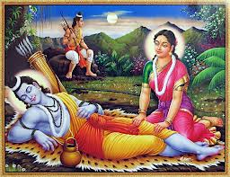
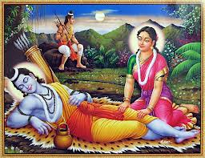
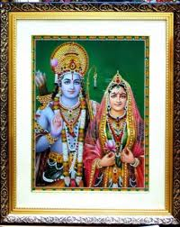

चौपाई :
मोहि उपदेसु दीन्ह गुरु नीका। प्रजा सचिव संमत सबही का॥ मातु उचित धरि आयसु दीन्हा। अवसि सीस धरि चाहउँ कीन्हा॥1॥
गुरुजी ने मुझे सुंदर उपदेश दिया। (फिर) प्रजा, मंत्री आदि सभी को यही उचित और सम्मत है। माता ने भी उचित समझकर ही आज्ञा दी है और मैं भी अवश्य उसको सिर चढ़ाकर वैसा ही करना चाहता हूँ॥1॥
गुर पितु मातु स्वामि हित बानी। सुनि मन मुदित करिअ भलि जानी॥ उचित कि अनुचित किएँ बिचारू। धरमु जाइ सिर पातक भारू॥2॥
(क्योंकि) गुरु, पिता, माता, स्वामी और सुहृद् (मित्र) की वाणी सुनकर प्रसन्न मन से उसे भला समझकर (उसके अनुरूप ही कार्य) करना चाहिए। उचित-अनुचित का विचार करने से धर्म जाता है और सिर पर पाप का भार चढ़ता है॥2॥
तुम्ह तौ देहु सरल सिख सोई। जो आचरत मोर भल होई॥ जद्यपि यह समुझत हउँ नीकें। तदपि होत परितोष न जी कें॥3॥
आप तो मुझे वही सरल शिक्षा दे रहे हैं, जिसके आचरण करने में मेरा भला हो। यद्यपि मैं इस बात को भलीभाँति समझता हूँ, तथापि (एसा करने से) मेरे हृदय को संतोष नहीं होता-मेरा हृदय इसको उपयुक्त नहीं मानता ॥3॥
अब तुम्ह बिनय मोरि सुनि लेहू। मोहि अनुहरत सिखावनु देहू॥ ऊतरु देउँ छमब अपराधू। दुखित दोष गुन गनहिं न साधू॥4॥
अब आप लोग मेरी विनती सुन लीजिए और फिर मेरी योग्यता के अनुसार मुझे शिक्षा दीजिए। मैं उत्तर दे रहा हूँ, यह अपराध क्षमा कीजिए। साधु पुरुष दुःखी मनुष्य के दोष-गुणों को नहीं गिनते।
दोहा :
पितु सुरपुर सिय रामु बन करन कहहु मोहि राजु। एहि तें जानहु मोर हित कै आपन बड़ काजु॥177॥
पिताजी स्वर्ग में हैं, श्री सीतारामजी वन में हैं और मुझे आप राज्य करने के लिए कह रहे हैं। इसमें आप मेरा कोई कल्याण समझते हैं या फिर अपना कोई बड़ा काम सिद्ध करना चाहते हैं ॥177॥
चौपाई :
हित हमार सियपति सेवकाईं। सो हरि लीन्ह मातु कुटिलाईं॥ मैं अनुमानि दीख मन माहीं। आन उपायँ मोर हित नाहीं॥1॥
मेरा कल्याण तो सीतापति श्री रामजी की चाकरी में है, सो तो माता की कुटिलता ने छीन लिया। मैंने अपने मन में अनुमान करके-गौर करके देख लिया है कि दूसरे किसी उपाय से मेरा कल्याण नहीं है॥1॥
सोक समाजु राजु केहि लेखें। लखन राम सिय बिनु पद देखें॥ बादि बसन बिनु भूषन भारू। बादि बिरति बिनु ब्रह्मबिचारू॥2॥
यह शोक भरा साम्राज्य लक्ष्मण, श्री रामचंद्रजी और सीताजी के चरणों को देखे बिना किस गिनती में है (इसका क्या मूल्य है)? जैसे कपड़ों के बिना गहनों का बोझ व्यर्थ है। वैराग्य के बिना ब्रह्मविचार व्यर्थ है॥2॥
सरुज सरीर बादि बहु भोगा। बिनु हरिभगति जायँ जप जोगा॥ जायँ जीव बिनु देह सुहाई। बादि मोर सबु बिनु रघुराई॥3॥
रोगी शरीर के लिए नाना प्रकार के भोग व्यर्थ हैं। श्री हरि की भक्ति के बिना जप और योग व्यर्थ हैं। जीवात्मा के बिना सुंदर देह व्यर्थ है, वैसे ही श्री रघुनाथजी के बिना मेरा सब कुछ व्यर्थ है॥3॥
जाउँ राम पहिं आयसु देहू। एकाहिं आँक मोर हित एहू॥ मोहि नृप करि भल आपन चहहू। सोउ सनेह जड़ता बस कहहू॥4॥
मुझे आज्ञा दीजिए, मैं श्री रामजी के पास जाऊँ! एक ही लक्ष्य और निश्चयपूर्वक मेरा हित इसी में है। और मुझे राजा बनाकर आप अपना भला चाहते हैं, यह भी आप स्नेह की जड़ता, मोहवश ही कह रहे हैं॥4॥
दोहा :
कैकेई सुअ कुटिलमति राम बिमुख गतलाज। तुम्ह चाहत सुखु मोहबस मोहि से अधम कें राज॥178॥
कैकेयी के पुत्र, कुटिलबुद्धि, रामविमुख और निर्लज्ज (भरत से )अधम के राज्य द्वारा आप मोह वश ही मुझसे सुख चाहते हैं॥178॥
चौपाई :
कहउँ साँचु सब सुनि पतिआहू। चाहिअ धरमसील नरनाहू॥ मोहि राजु हठि देइहहु जबहीं। रसा रसातल जाइहि तबहीं॥1॥
मैं सत्य कहता हूँ, आप सब सुनकर विश्वास करें, धर्मशील को ही राजा होना चाहिए। आप मुझे हठ करके ज्यों ही राज्य देंगे, त्यों ही पृथ्वी पाताल में धँस जाएगी॥1॥
मोहि समान को पाप निवासू। जेहि लगि सीय राम बनबासू॥ रायँ राम कहुँ काननु दीन्हा। बिछुरत गमनु अमरपुर कीन्हा॥2॥
मेरे समान पापों का घर, महापापी कौन होगा, जिसके कारण सीताजी और श्री रामजी को वनवास हुआ? राजा ने श्री रामजी को वन दिया और उनके बिछुड़ते ही स्वयं स्वर्ग को गमन किया॥2॥
मैं सठु सब अनरथ कर हेतू। बैठ बात सब सुनउँ सचेतू॥ बिन रघुबीर बिलोकि अबासू। रहे प्रान सहि जग उपहासू॥3॥
और मैं दुष्ट, जो (इन सब )अनर्थों का कारण हूँ, सछेत और सावधान बैठा सब बातें सुन रहा हूँ। बिना श्री रघुनाथजी के सुन्ना घर को देखकर और जगत् का उपहास सहकर भी ये प्राण कायम हैं॥3॥
राम पुनीत बिषय रस रूखे। लोलुप भूमि भोग के भूखे॥ कहँ लगि कहौं हृदय कठिनाई। निदरि कुलिसु जेहिं लही बड़ाई॥4॥
(इसका यही कारण है कि ये प्राण) श्री राम रूपी पवित्र विषय रस में आसक्त नहीं हैं। ये लालची भूमि और सांसारिक भोगों के ही भूखे हैं। मैं अपने हृदय की कठोरता कहाँ तक कहूँ? जिसने वज्र का भी तिरस्कार करके बड़ाई पाई है- जिसने कठोरता में वज्र को भी परास्त किया है। ॥4॥
दोहा :
कारन तें कारजु कठिन होइ दोसु नहिं मोर। कुलिस अस्थि तें उपल तें लोह कराल कठोर॥179॥
कारण से कार्य कठिन होता ही है, इसमें मेरा दोष नहीं। हड्डी से वज्र और पत्थर से लोहा भयानक और कठोर होता है॥179॥
चौपाई :
कैकेई भव तनु अनुरागे। पावँर प्रान अघाइ अभागे॥ जौं प्रिय बिरहँ प्रान प्रिय लागे। देखब सुनब बहुत अब आगे॥1॥
कैकेयी से उत्पन्न देह से प्रेम करने वाले ये पामर प्राण भरपूर अभागे हैं। जब प्रिय के वियोग में भी मुझे प्राण प्रिय लग रहे हैं, तब अभी आगे मैं और भी बहुत कुछ देखूँ- सुनूँगा॥1॥
लखन राम सिय कहुँ बनु दीन्हा। पठइ अमरपुर पति हित कीन्हा॥ लीन्ह बिधवपन अपजसु आपू। दीन्हेउ प्रजहि सोकु संतापू॥2॥
लक्ष्मण, श्री रामजी और सीताजी को तो वन दिया। स्वर्ग भेजकर पति का कल्याण किया ! स्वयं विधवापन और अपयश लिया, प्रजा को शोक और संताप दिया….. ॥2॥
मोहि दीन्ह सुखु सुजसु सुराजू। कीन्ह कैकईं सब कर काजू॥ ऐहि तें मोर काह अब नीका। तेहि पर देन कहहु तुम्ह टीका॥3॥
और मुझे सुख, सुंदर यश और उत्तम राज्य दिया! कैकेयी ने सभी का काम सिद्ध कर दिया! इससे अच्छा अब मेरे लिए और क्या होगा? उस पर भी आप लोग मुझे राजतिलक देने को कहते हैं!॥3॥
कैकइ जठर जनमि जग माहीं। यह मोहि कहँ कछु अनुचित नाहीं॥ मोरि बात सब बिधिहिं बनाई। प्रजा पाँच कत करहु सहाई॥4॥
कैकयी के पेट से जगत् में जन्म लेकर यह मेरे लिए कुछ भी अनुचित नहीं है। मेरी सब बात तो विधाता ने वैसे ही बना दी है। (तो फिर) उसमें प्रजा और पंच (आप लोग) क्या सहायता कर रहे हैं?( आपकी सहायता की जरूरत क्या?)॥4॥
दोहा :
ग्रह ग्रहीत पुनि बात बस तेहि पुनि बीछी मार। तेहि पिआइअ बारुनी कहहु काह उपचार॥180॥
जिसे कुग्रह लगे हों (अथवा जो पिशाचग्रस्त हो), फिर जो वायुरोग से पीड़ित हो और उसी को फिर बिच्छू डंक मार दे, उसको यदि मदिरा पिलाई जाए, तो कहिए यह कैसा इलाज है!॥180॥
चौपाई :
कैकइ सुअन जोगु जग जोई। चतुर बिरंचि दीन्ह मोहि सोई॥ दसरथ तनय राम लघु भाई। दीन्हि मोहि बिधि बादि बड़ाई॥1॥
कैकेयी के लड़के के लिए संसार में जो कुछ योग्य था, चतुर विधाता ने मुझे वही दिया। पर 'दशरथजी का पुत्र' और 'राम का छोटा भाई' होने की बड़ाई मुझे विधाता ने व्यर्थ ही दी (क्योंकि में उस योग्य कदापि नहीं हूँ ।)॥1॥
तुम्ह सब कहहु कढ़ावन टीका। राय रजायसु सब कहँ नीका॥ उतरु देउँ केहि बिधि केहि केही। कहहु सुखेन जथा रुचि जेही॥2॥
आप सब लोग भी मुझे टीका कढ़ाने-राजा बनाने के लिए कह रहे हैं! राजा की आज्ञा सभी के लिए सिरोधार्य है। मैं किस-किस को किस-किस प्रकार से उत्तर दूँ? जिसकी जैसी रुचि हो, आप लोग सुखपूर्वक वही कहें॥2॥
मोहि कुमातु समेत बिहाई। कहहु कहिहि के कीन्ह भलाई॥ मो बिनु को सचराचर माहीं। जेहि सिय रामु प्रानप्रिय नाहीं॥3॥
मेरी कुमाता कैकेयी समेत मुझे छोड़कर, कहिए और कौन कहेगा कि यह काम भला-उचित हुआ है ? जड़-चेतन जगत् में मेरे सिवा और कौन है, जिसको श्री सीता-रामजी प्राणों के समान प्यारे न हों॥3॥
परम हानि सब कहँ बड़ लाहू। अदिनु मोर नहिं दूषन काहू॥ संसय सील प्रेम बस अहहू। सबुइ उचित सब जो कछु कहहू॥4॥
जो (मेरी)परम हानि है, उसी में सबको बड़ा लाभ दिख रहा है। मेरा बुरा दिन है किसी का दोष नहीं। क्योंकि आप लोग संशय, शील और प्रेम के वश हैं इसलिए आप सब जो कुछ कह रहे हैं सो सब उचित ही है, ॥4॥
दोहा :
राम मातु सुठि सरलचित मो पर प्रेमु बिसेषि। कहइ सुभाय सनेह बस मोरि दीनता देखि॥181॥
श्री रामचंद्रजी की माता बहुत ही सरल हृदय हैं और मुझ पर उनका विशेष प्रेम है, इसलिए मेरी दीनता देखकर वे स्वाभाविक स्नेहवश (दयाभाव) ही ऐसा कह रही हैं॥181॥
चौपाई :
गुर बिबेक सागर जगु जाना। जिन्हहि बिस्व कर बदर समाना॥ मो कहँ तिलक साज सज सोऊ। भएँ बिधि बिमुख बिमुख सबु कोऊ॥1॥
गुरुजी ज्ञान के समुद्र हैं, इस बात को सारा जगत् जानता है, उनके लिए विश्व हथेली पर रखे हुए बेर के समान है, वे भी मुझे राजतिलक से सज्जने सँवरने के लिए कह रहे हैं।जब विधाता विपरीत होता है तो फिर सब कोई (अपने आप ) विपरीत हो जाते हैं॥1॥
परिहरि रामु सीय जग माहीं। कोउ न कहिहि मोर मत नाहीं॥ सो मैं सुनब सहब सुखु मानी। अंतहुँ कीच तहाँ जहँ पानी॥2॥
श्री रामचंद्रजी और सीताजी को छोड़कर जगत् में कोई यह नहीं कहेगा कि इस पाप कर्म में मेरी सम्मति नहीं है। मैं उस (कटु सत्य) को सुखपूर्वक सुनूँगा और सहूँगा, क्योंकि जहाँ पानी होता है अन्त में कीचड़ भी वहीं होता है॥2॥
डरु न मोहि जग कहिहि कि पोचू। परलोकहु कर नाहिन सोचू॥ एकइ उर बस दुसह दवारी। मोहि लगि भे सिय रामु दुखारी॥3॥
जगत् मुझे बुरा कहेगा इसका मुझे कोई डर नहीं है। और न मुझे परलोक (बिगड़ने सुधरने ) का ही सोच है। मेरे कारण श्री सीता-रामजी दुःखी हुए हैं। मेरे हृदय में तो बस यही एक दुःसह दावानल धधक रहा है ॥3॥
जीवन लाहु लखन भल पावा। सबु तजि राम चरन मनु लावा॥ मोर जनम रघुबर बन लागी। झूठ काह पछिताउँ अभागी॥4॥
जीवन का उत्तम लाभ-परम उद्देश्य तो लक्ष्मण ने पाया, जिन्होंने सब कुछ तजकर श्री रामजी के चरणों में मन लगाया। मेरा जन्म तो श्री रामजी को वनवास भेजने के लिए ही हुआ था। मैं अभागा अब झूठ-मूठ क्या पछताऊँ ?॥4॥
दोहा :
आपनि दारुन दीनता कहउँ सबहि सिरु नाइ। देखें बिनु रघुनाथ पद जिय कै जरनि न जाइ॥182॥
सबको सिर झुकाकर मैं अपनी दारुण दीनता-मेरा मर्म कहता हूँ। श्री रघुनाथजी के चरणों के दर्शन किए बिना मेरे जी की जलन जाने वाली नहीं ॥182॥
चौपाई :
आन उपाउ मोहि नहिं सूझा। को जिय कै रघुबर बिनु बूझा॥ एकहिं आँक इहइ मन माहीं। प्रातकाल चलिहउँ प्रभु पाहीं॥1॥
श्री राम के बिना मेरे हृदय की बात कौन जान सकता है? इसलिए मुझे दूसरा कोई उपाय नहीं सूझता। मेरे मन में तो बस एक ही (पवित्र निश्चय ) अंश -आँक (उपजा) है कि प्रातः काल श्री रामजी के पास चल दूँ ॥1॥
जद्यपि मैं अनभल अपराधी। भै मोहि कारन सकल उपाधी॥ तदपि सरन सनमुख मोहि देखी। छमि सब करिहहिं कृपा बिसेषी॥2॥
यद्यपि मैं बुरा हूँ और अपराधी हूँ और मेरे ही कारण यह सब उपद्रव हुआ है, तो भी श्री रामजी मुझे शरण में सम्मुख आया हुआ देखकर मुझ पर विशेष कृपा करके मेरे सब अपराध क्षमा कर देंगे ॥2॥
सील सकुच सुठि सरल सुभाऊ। कृपा सनेह सदन रघुराऊ॥ अरिहुक अनभल कीन्ह न रामा। मैं सिसु सेवक जद्यपि बामा॥3॥
श्री रघुनाथजी शील, संकोच, अत्यन्त सरल स्वभाव, कृपा और स्नेह के स्रोत हैं। श्री रामजी ने तो कभी शत्रु का भी अनिष्ट-बुरा नहीं किया। मैं यद्यपि टेढ़ा-उनके विपरीत चला हूँ, फिर भी हूँ तो उनका बालक सेवक ही॥3॥
तुम्ह पै पाँच मोर भल मानी। आयसु आसिष देहु सुबानी॥ जेहिं सुनि बिनय मोहि जनु जानी। आवहिं बहुरि रामु रजधानी॥4॥
आप (सब) पंच लोग भी इसी में मेरा कल्याण मानो और शुभ सुंदर वाणी से मुझे आज्ञा और आशीर्वाद दीजिए, जिससे कि मुझे अपना दास जानकर और मेरी विनती सुनकर श्री रामचन्द्रजी राजधानी को लौट आवें॥4॥
दोहा :
जद्यपि जनमु कुमातु तें मैं सठु सदा सदोस। आपन जानि न त्यागिहहिं मोहि रघुबीर भरोस॥183॥
यद्यपि मेरा जन्म कुमाता से हुआ है और मैं जन्मजात दुष्ट तथा दोषयुक्त भी हूँ, तो भी मुझे श्री रामजी का भरोसा है- आश है कि वे मुझे अपना जानकर त्यागेंगे नहीं॥183॥
चौपाई :
भरत बचन सब कहँ प्रिय लागे। राम सनेह सुधाँ जनु पागे॥ लोग बियोग बिषम बिष दागे। मंत्र सबीज सुनत जनु जागे॥1॥
भरतजी के वचन सबको प्यारे लगे। मानो वे श्री रामजी के प्रेमरूपी अमृत में पगे-लिपटे हुए हैं । श्री रामवियोग रूपी भीषण विष से सब लोग जले हुए हैं । वे मानो बीज सहित मंत्र को सुनते ही जाग उठे –खिल गये ॥1॥
मातु सचिव गुर पुर नर नारी। सकल सनेहँ बिकल भए भारी॥ भरतहि कहहिं सराहि सराही। राम प्रेम मूरति तनु आही॥2॥
माता, मंत्री, गुरु, नगर के स्त्री-पुरुष सभी स्नेह के कारण बहुत ही व्याकुल हो गए। सब भरतजी को सराहना, बड़ाई कर करके कहते हैं कि आपका शरीर तो साक्षात श्री रामप्रेम की मूर्ति ही है॥2॥
तात भरत अस काहे न कहहू। प्रान समान राम प्रिय अहहू॥ जो पावँरु अपनी जड़ताईं। तुम्हहि सुगाइ मातु कुटिलाईं॥3॥
हे तात भरत! आप ऐसा क्यों न कहें। श्री रामजी को आप प्राणों के समान प्यारे हैं। जो नीच अपनी मूर्खता से आपकी माता कैकेयी की कुटिलता को लेकर आप पर सन्देह करेगा… ॥3॥
सो सठु कोटिक पुरुष समेता। बसिहि कलप सत नरक निकेता॥ अहि अघ अवगुन नहिं मनि गहई। हरइ गरल दुख दारिद दहई॥4॥
वह दुष्ट करोड़ों पुरखों सहित सौ कल्पों तक नरक के घर में निवास करेगा। मणि कभी साँप के पाप और अवगुण ग्रहण नहीं करती, बल्कि वह विष को हर लेती है और दुःख तथा दरिद्रता को भस्म कर देती है॥4॥
दोहा :
अवसि चलिअ बन रामु जहँ भरत मंत्रु भल कीन्ह। सोक सिंधु बूड़त सबहि तुम्ह अवलंबनु दीन्ह॥184॥
हे भरतजी! जहाँ श्री रामजी हैं वहाँ वन को अवश्य चलिए, आपने बहुत ही नेक विचार और निश्चय किया है। शोक समुद्र में डूबते हुए सब लोगों को आपने (बड़ा) सहारा दे दिया, डूबते हुओं को उबार लिया है ॥184॥
चौपाई :
भा सब कें मन मोदु न थोरा। जनु घन धुनि सुनि चातक मोरा॥ चलत प्रात लखि निरनउ नीके। भरतु प्रानप्रिय भे सबही के॥1॥
सबके मन में आनंद की कोई कमी नहीं है। मानो मेघों की गर्जना सुनकर चातक और मोर आनंदित हो रहे हों। (दूसरे दिन) प्रातःकाल चलने का शुभ सुंदर निर्णय सुनते ही भरतजी सभी के प्राणप्रिय हो गए॥1॥
मुनिहि बंदि भरतहि सिरु नाई। चले सकल घर बिदा कराई॥ धन्य भरत जीवनु जग माहीं। सीलु सनेहु सराहत जाहीं॥2॥
मुनि वशिष्ठजी की वंदना करके और भरतजी को सिर नवाकर, सब लोग विदा लेकर अपने-अपने घर को चले। जगत में भरतजी का जीना -जीवन धन्य है, इस प्रकार कहते हुए वे उनके शील और स्नेह की सराहना करते जाते हैं॥2॥
कहहिं परसपर भा बड़ काजू। सकल चलै कर साजहिं साजू॥ जेहि राखहिं रहु घर रखवारी। सो जानइ जनु गरदनि मारी॥3॥
आपस में कहते हैं, बड़ा उत्तम काम हुआ। सभी चलने की तैयारी करने लगे। जिसको भी घर की रखवाली के लिए घर पर रहने को कहते हैं - वही समझता है। (राम दर्सशन का ) मेरा अधिकार –सुअवसर तो गया। ॥3॥
कोउ कह रहन कहिअ नहिं काहू। को न चहइ जग जीवन लाहू॥4॥
कोई-कोई कहते हैं- रहने के लिए किसी को भी मत कहो, जगत में जीवन(राम दर्शन) का लाभ कौन नहीं चाहता?॥4॥
दोहा :
जरउ सो संपति सदन सुखु सुहृद मातु पितु भाइ। सनमुख होत जो राम पद करै न सहस सहाइ॥185॥
वह सम्पत्ति, घर, सुख, मित्र, माता, पिता, भाई जल जाए जो श्री रामजी के चरणों के सम्मुख होने में जो सहज ही सहायक न हो।185॥
चौपाई :
घर घर साजहिं बाहन नाना। हरषु हृदयँ परभात पयाना॥ भरत जाइ घर कीन्ह बिचारू। नगरु बाजि गज भवन भँडारू॥1॥
घर-घर लोग अनेकों प्रकार की सवारियाँ सजा रहे हैं। हृदय में (बड़ा) हर्ष है कि सुबह -सवेरे चलना है। भरतजी ने घर जाकर विचार किया कि नगर घोड़े, हाथी, महल-खजाना आदि-॥1॥
संपति सब रघुपति कै आही। जौं बिनु जतन चलौं तजि ताही॥ तौ परिनाम न मोरि भलाई। पाप सिरोमनि साइँ दोहाई॥2॥
सारी सम्पत्ति श्री रघुनाथजी की (मेरी जिम्मेवारी पर) है। यदि उसकी (सुरक्षा) व्यवस्था किए बिना उसे ऐसे ही (असुरक्षित) छोड़कर चल दूँ, तो परिणाम में मेरी भलाई नहीं है, क्योंकि स्वामी से द्रोह सब पापों में घोर पाप है॥2॥
करइ स्वामि हित सेवकु सोई। दूषन कोटि देइ किन कोई॥ अस बिचारि सुचि सेवक बोले। जे सपनेहुँ निज धरम न डोले॥3॥
सेवक वही है, जो स्वामी का हित करे, चाहे कोई करोड़ों दोष क्यों न दे। भरतजी ने ऐसा विचारकर ऐसे विश्वासपात्र सेवकों को बुलाया, जो कभी स्वप्न में भी अपने धर्म से नहीं डिगे ॥3॥
कहि सबु मरमु धरमु भल भाषा। जो जेहि लायक सो तेहिं राखा॥ करि सबु जतनु राखि रखवारे। राम मातु पहिं भरतु सिधारे॥4॥
भरतजी ने उन सब को भली प्रकार विद्या –भेद समझाकर फिर उनका उत्तम धर्म बतलाया और जो जिस योग्य था, उसे वैसे ही काम पर नियुक्त कर दिया। सब व्यवस्था करके, रक्षकों को अच्छे से स्थापित करके भरतजी राम माता कौसल्याजी के पास गए॥4॥
दोहा :
आरत जननी जानि सब भरत सनेह सुजान। कहेउ बनावन पालकीं सजन सुखासन जान॥186॥
सुजान स्नेही, प्रेम तत्व को जानने वाले भरतजी ने सब माताओं को आर्त (दुःखी) जानकर उनके लिए पालकियाँ तैयार करने तथा सुखासन यान (सुखपाल) सजाने के आदेश दिये ॥186॥
चौपाई :
चक्क चक्कि जिमि पुर नर नारी। चहत प्रात उर आरत भारी॥ जागत सब निसि भयउ बिहाना। भरत बोलाए सचिव सुजाना॥1॥
नगर के नर-नारी चकवे-चकवी की भाँति हृदय में (श्री राम दर्शन के प्यासे) अत्यन्त आर्त हुये प्रातःकाल होने की चाह-चाव में हैं । सारी रात जागते-जागते सबेरा हो गया। तब भरतजी ने चतुर मंत्रियों को बुलवाया॥1॥
कहेउ लेहु सबु तिलक समाजू। बनहिं देब मुनि रामहि राजू॥ बेगि चलहु सुनि सचिव जोहारे। तुरत तुरग रथ नाग सँवारे॥2॥
और कहा- तिलक का सब सामान ले चलो। वन में ही मुनि वशिष्ठजी श्री रामचन्द्रजी को राज्य देंगे, जल्दी चलो। यह सुनकर मंत्रियों ने वंदना की और तुरंत घोड़े, रथ और हाथी सजवा दिए॥2॥
अरुंधती अरु अगिनि समाऊ। रथ चढ़ि चले प्रथम मुनिराऊ॥ बिप्र बृंद चढ़ि बाहन नाना। चले सकल तप तेज निधाना॥3॥
सबसे पहले मुनिराज वशिष्ठजी अरुंधती और अग्निहोत्र की सब सामग्री सहित रथ पर सवार होकर चले। फिर ब्राह्मणों के समूह, जो सब के सब तपस्या और तेज के भंडार हैं, अनेकों सवारियों पर चढ़कर चले॥3॥
नगर लोग सब सजि सजि जाना। चित्रकूट कहँ कीन्ह पयाना॥ सिबिका सुभग न जाहिं बखानी। चढ़ि चढ़ि चलत भईं सब रानी॥4॥
नगर के सब लोग रथों को सजा-सजाकर चित्रकूट को चल पड़े। जिनका वर्णन नहीं हो सकता, ऐसी सुंदर पालकियों पर चढ़-चढ़कर सब रानियाँ चलीं॥4॥
दोहा :
सौंपि नगर सुचि सेवकनि सादर सकल चलाइ। सुमिरि राम सिय चरन तब चले भरत दोउ भाइ॥187॥
विश्वासपात्र सेवकों को नगर सौंपकर और सबको आदरपूर्वक रवाना करके, तब श्री सीता-रामजी के चरणों को स्मरण करके भरत-शत्रुघ्न दोनों भाई चले॥187॥
चौपाई :
राम दरस बस सब नर नारी। जनु करि करिनि चले तकि बारी॥ बन सिय रामु समुझि मन माहीं। सानुज भरत पयादेहिं जाहीं॥1॥
श्री रामचन्द्रजी के दर्शन के वश में हुए (दर्शन की अनन्य लालसा से) सब नर-नारी ऐसे चले मानो प्यासे हाथी-हथिनी जल को तककर (बड़ी तेजी से बावले से हुए) जा रहे हों। श्री सीताजी-रामजी (सब सुखों को छोड़कर) वन में हैं, मन में ऐसा विचार करके छोटे भाई शत्रुघ्नजी सहित भरतजी पैदल ही चले जा रहे हैं॥1॥
देखि सनेहु लोग अनुरागे। उतरि चले हय गय रथ त्यागे॥ जाइ समीप राखि निज डोली। राम मातु मृदु बानी बोली॥2॥
उनका स्नेह देखकर लोग प्रेम में मग्न हो गए और घोड़े, हाथी, रथों को छोड़कर, नीचे उतरकर सब पैदल चलने लगे। तब श्री रामचन्द्रजी की माता कौसल्याजी भरत के पास जाकर और अपनी पालकी उनके समीप खड़ी करके कोमल वाणी से बोलीं-॥2॥
तात चढ़हु रथ बलि महतारी। होइहि प्रिय परिवारु दुखारी॥ तुम्हरें चलत चलिहि सबु लोगू। सकल सोक कृस नहिं मग जोगू॥3॥
हे बेटा! माता तुम्हारे (इस स्नेह) पर बलिहारी जाती है। तुम रथ पर चढ़ जाओ। नहीं तो सारा परिवार दुःखी हो जाएगा। तुम्हारे पैदल चलने से सभी लोग (तुम्हारा अनुसरण करके) पैदल ही चलेंगे। शोक के मारे सब दुबले हो रहे हैं और फिर रास्ता भी पैदल चलने के योग्य नहीं हैं॥3॥
सिर धरि बचन चरन सिरु नाई। रथ चढ़ि चलत भए दोउ भाई॥ तमसा प्रथम दिवस करि बासू। दूसर गोमति तीर निवासू॥4॥
माता की आज्ञा को सिर चढ़ाकर और उनके चरणों में सिर नवाकर दोनों भाई रथ पर चढ़कर चलने लगे। पहले दिन तमसा पर वास (मुकाम) करके दूसरा मुकाम गोमती के तीर पर किया॥4॥
दोहा :
पय अहार फल असन एक निसि भोजन एक लोग। करत राम हित नेम ब्रत परिहरि भूषन भोग॥188॥
कोई दूध ही पीते, कोई फलाहार करते और कुछ लोग रात को एक ही बार भोजन करते हैं। साज-शृंगार और भोग-विलास को छोड़कर सब लोग श्री रामचन्द्रजी के लिए नियम और व्रत करते हैं॥188॥
चौपाई :
सई तीर बसि चले बिहाने। सृंगबेरपुर सब निअराने॥ समाचार सब सुने निषादा। हृदयँ बिचार करइ सबिषादा॥1॥
रात भर सई नदी के तीर पर निवास करके सबेरे वहाँ से चल दिए और सब श्रृंगवेरपुर के समीप जा पहुँचे। निषादराज ने सब समाचार सुने, तो वह दुःखी होकर हृदय में विचार करने लगा-॥1॥
कारन कवन भरतु बन जाहीं। है कछु कपट भाउ मन माहीं॥ जौं पै जियँ न होति कुटिलाई। तौ कत लीन्ह संग कटकाई॥2॥
क्या कारण है जो भरत वन को जा रहे हैं, मन में कुछ कपट भाव अवश्य है। यदि मन में कुटिलता न होती, तो साथ में सेना क्यों लिये जा रहे हैं॥2॥
जानहिं सानुज रामहि मारी। करउँ अकंटक राजु सुखारी॥ भरत न राजनीति उर आनी। तब कलंकु अब जीवन हानी॥3॥
समझते हैं कि छोटे भाई लक्ष्मण सहित श्री राम को मारकर सुख से निष्कण्टक राज्य करूँगा। भरत ने हृदय में राजनीति को स्थान नहीं दिया (इस कदम के घातक परिणाम का विचार नहीं किया)। तब (पहले) तो कलंक ही लगा था, अब तो जीवन से ही हाथ धोना पड़ेगा॥3॥
सकल सुरासुर जुरहिं जुझारा। रामहि समर न जीतनिहारा॥ का आचरजु भरतु अस करहीं। नहिं बिष बेलि अमिअ फल फरहीं॥4॥
सम्पूर्ण देवता और दैत्य वीर जुट जाएँ, तो भी श्री रामजी को रण में जीतने वाला कोई नहीं है। भरत जो ऐसा कर रहे हैं, इसमें आश्चर्य ही क्या है? विष की बेलों पर अमृतफल कभी नहीं फलते !॥4॥
दोहा :
अस बिचारि गुहँ ग्याति सन कहेउ सजग सब होहु। हथवाँसहु बोरहु तरनि कीजिअ घाटारोहु॥189॥
ऐसा विचारकर गुह (निषादराज) ने अपनी जाति वालों से कहा कि सब लोग सावधान हो जाओ। नावों को हाथ में (कब्जे में) कर लो और फिर उन्हें डुबा दो तथा सब घाटों को रोक दो॥189॥
चौपाई :
होहु सँजोइल रोकहु घाटा। ठाटहु सकल मरै के ठाटा॥ सनमुख लोह भरत सन लेऊँ। जिअत न सुरसरि उतरन देऊँ॥1॥
सुसज्जित होकर घाटों को रोक लो और सब लोग (श्री राम कारज के लिये )लड़ मरने के (यूध्द के) साज सजा लो । मैं भरत से सामने (मैदान में) लोहा लूँगा (मुकाबला करूँगा) और जीते जी उन्हें गंगा पार न उतरने दूँगा॥1॥
समर मरनु पुनि सुरसरि तीरा। राम काजु छनभंगु सरीरा॥ भरत भाइ नृपु मैं जन नीचू। बड़ें भाग असि पाइअ मीचू॥2॥
(धर्म) युद्ध में मरना, फिर गंगाजी का तट हो, और उसपर श्री राम कारज (सभी तो एक से बढ़ कर एक उत्तम अवस्थाएँ हैं।) मैं नीच-तुच्छ राम सेवक और ये क्षणभंगुर शरीर ! अगर श्री भरत, श्री रामजी के भाई और फिर राजा, जो उनके हाथ से मरना हो जाये तो ऐसी मृत्यु तो बड़े भाग्य से मिलती है॥2॥
स्वामि काज करिहउँ रन रारी। जस धवलिहउँ भुवन दस चारी॥ तजउँ प्रान रघुनाथ निहोरें। दुहूँ हाथ मुद मोदक मोरें॥3॥
मैं स्वामी के काम के लिए रण में लड़ाई करूँगा और चौदहों लोकों को अपने (राम सेवा) यश से उज्ज्वल कर दूँगा। श्री रघुनाथजी के निमित्त प्राण त्याग दूँगा। मेरे तो दोनों ही हाथों में आनंद के लड्डू हैं। (अर्थात जीत गया तो राम सेवक का यश प्राप्त करूँगा और मारा गया तो श्री रामजी की नित्य सेवा प्राप्त करूँगा)॥3॥
साधु समाज न जाकर लेखा। राम भगत महुँ जासु न रेखा॥ जायँ जिअत जग सो महि भारू। जननी जौबन बिटप कुठारू॥4॥
साधुओं के समाज में जिसकी गिनती नहीं और श्री रामजी के भक्तों में जिसका स्थान नहीं, वह जगत में पृथ्वी पर भार होकर व्यर्थ ही जीता है। वह माता के यौवन रूपी वृक्ष के काटने के लिए कुल्हाड़ा मात्र है॥4॥
दोहा :
बिगत बिषाद निषादपति सबहि बढ़ाइ उछाहु। सुमिरि राम मागेउ तुरत तरकस धनुष सनाहु॥190॥
(इस प्रकार श्री रामजी के लिए प्राण न्योच्छवर करने का निश्चय करके) निषादराज विषाद -दु:ख दुविधा से मुक्त हो गया और सबका उत्साह बढ़ाकर तथा श्री रामचन्द्रजी का सुमरण करके उसने तुरंत ही तरकस, धनुष और कवच माँगा॥190॥
चौपाई :
बेगहु भाइहु सजहु सँजोऊ। सुनि रजाइ कदराइ न कोऊ॥ भलेहिं नाथ सब कहहिं सहरषा। एकहिं एक बढ़ावइ करषा॥1॥
(उसने कहा-) हे भाइयों! जल्दी करो और सब सामान सजाओ। मेरी आज्ञा सुनकर कोई मन में कायरता न लावे। सब हर्ष के साथ बोल उठे- हे नाथ! बहुत अच्छा और आपस में एक-दूसरे का उत्साह बढ़ाने लगे॥1॥
चले निषाद जोहारि जोहारी। सूर सकल रन रूचइ रारी॥ सुमिरि राम पद पंकज पनहीं। भाथीं बाँधि चढ़ाइन्हि धनहीं॥2॥
निषादराज को जोहार कर-करके सब निषाद चले। सभी बड़े शूरवीर हैं और संग्राम में लड़ना उन्हें बहुत अच्छा लगता है। श्री रामचन्द्रजी के चरणकमलों की जूतियों का स्मरण करके उन्होंने भाथियाँ (छोटे-छोटे तरकस) बाँधकर धनुहियों (छोटे-छोटे धनुषों) पर प्रत्यंचा चढ़ाई॥2॥
अँगरी पहिरि कूँड़ि सिर धरहीं। फरसा बाँस सेल सम करहीं॥ एक कुसल अति ओड़न खाँड़े। कूदहिं गगन मनहुँ छिति छाँड़े॥3॥
कवच पहनकर सिर पर लोहे का टोप रखते हैं और फरसे, भाले तथा बरछों को सीधा कर रहे हैं (सुधार रहे हैं)। कोई तलवार के वार रोकने में अत्यन्त ही कुशल है। वे ऐसे उमंग में भरे हैं, मानो धरती छोड़कर आकाश में कूद (उछल) रहे हों॥3॥
निज निज साजु समाजु बनाई। गुह राउतहि जोहारे जाई॥ देखि सुभट सब लायक जाने। लै लै नाम सकल सनमाने॥4॥
अपना-अपना साज-समाज (लड़ाई का सामान और दल) बनाकर उन्होंने जाकर निषादराज गुह को जोहार की। निषादराज ने सुंदर योद्धाओं को देखकर, सबको सुयोग्य जाना और नाम ले-लेकर सबका सम्मान किया॥4॥
दोहा :
भाइहु लावहु धोख जनि आजु काज बड़ मोहि। सुनि सरोष बोले सुभट बीर अधीर न होहि॥191॥
(उसने कहा-) हे भाइयों! दुविधा में न रहना (अर्थात मरने से न घबड़ाना), आज मेरा बड़ा भारी काम है। यह सुनकर सब योद्धा बड़े जोश से एक साथ बोल उठे- हे वीर! अधीर मत हो, (हम तैयार हैं) ॥191॥
चौपाई :
राम प्रताप नाथ बल तोरे। करहिं कटकु बिनु भट बिनु घोरे॥ जीवन पाउ न पाछें धरहीं। रुंड मुंडमय मेदिनि करहीं॥1॥
हे नाथ! श्री रामचन्द्रजी के प्रताप से और आपके बल से हम लोग भरत की सेना को बिना वीर और बिना घोड़े की कर देंगे (एक-एक वीर और एक-एक घोड़े को मार डालेंगे)। जीते जी पीछे पाँव न रखेंगे। पृथ्वी को रुण्ड-मुण्डमयी कर देंगे -सिरों और धड़ों से पृथ्वी को पाट देंगे॥1॥
दीख निषादनाथ भल टोलू। कहेउ बजाउ जुझाऊ ढोलू॥ एतना कहत छींक भइ बाँए। कहेउ सगुनिअन्ह खेत सुहाए॥2॥
निषादराज ने वीरों का बढ़िया दल देखकर कहा- जुझारू (लड़ाई के उद्घोष का) ढोल बजाओ। इतना कहते ही बाईं ओर (किसी ने ) छींक दिया। शकुन विचारने वालों ने कहा कि शकुन सुंदर हैं (जीत होगी)॥2॥
बूढ़ु एकु कह सगुन बिचारी। भरतहि मिलिअ न होइहि रारी॥ रामहि भरतु मनावन जाहीं। सगुन कहइ अस बिग्रहु नाहीं॥3॥
एक बूढ़े ने शकुन विचारकर कहा- भरत से मिल लीजिए, लड़ाई नहीं होगी –लड़ाई की जरूरत नहीं पड़ेगी।शकुन ऐसा कह रहा है कि विरोध–शत्रुता नहीं है अपितु भरत तो श्री रामचन्द्रजी को मनाने जा रहे हैं। ॥3॥
सुनि गुह कहइ नीक कह बूढ़ा। सहसा करि पछिताहिं बिमूढ़ा॥ भरत सुभाउ सीलु बिनु बूझें। बड़ि हित हानि जानि बिनु जूझें॥4॥
यह सुनकर निषादराज गुहने कहा- बुजर्ग ठीक कह रहे हैं। अकस्मात- हड़बड़ी में (बिना विचारे) कोई काम करके मूर्ख लोग पछताते हैं। भरतजी का स्वभाव बड़ा शील है इसलिए बिना समझे और बिना जाने युद्ध करने में किसी की भलाई नहीं बल्कि बहुत बड़ी हानि है॥4॥
दोहा :
गहहु घाट भट समिटि सब लेउँ मरम मिलि जाइ। बूझि मित्र अरि मध्य गति तस तब करिहउँ आइ॥192॥
अतएव हे वीरों! तुम लोग इकट्ठे होकर सब घाटों को रोक लो, मैं जाकर भरतजी से मिलकर उनका भेद (उद्देश्य जान) लेता हूँ। उनका व्यवहार मित्र रूप है, शत्रु या फिर मध्यस्थ का है इसका भेद जानलूँ तब आकर वैसी ही उचित कार्यवाही करूँगा॥192॥
चौपाई :
लखब सनेहु सुभायँ सुहाएँ। बैरु प्रीति नहिं दुरइँ दुराएँ॥ अस कहि भेंट सँजोवन लागे। कंद मूल फल खग मृग मागे॥1॥
गौर करने पर ही उनका सुंदर सुहावना स्वभाव सब प्रकट कर देगा। वैर और प्रेम छिपाने से नहीं छिपते। ऐसा कहकर वह भेंट का सामान सजाने लगा। उसने कंद, मूल, फल, पक्षी और हिरन मँगवाए॥1॥
मीन पीन पाठीन पुराने। भरि भरि भार कहारन्ह आने॥ मिलन साजु सजि मिलन सिधाए। मंगल मूल सगुन सुभ पाए॥2॥
कहार लोग पुरानी और मोटी पहिना नामक मछलियों की बहंगियाँ भर-भरकर लाए। भेंट का सामान सजाकर मिलने के लिए चले तो मंगलदायक शुभसूचक संकेत मिले॥2॥
देखि दूरि तें कहि निज नामू। कीन्ह मुनीसहि दंड प्रनामू॥ जानि रामप्रिय दीन्हि असीसा। भरतहि कहेउ बुझाइ मुनीसा॥3॥
निषादराज ने मुनिराज वशिष्ठजी को देखकर अपना नाम बतलाकर दूर ही से दण्डवत प्रणाम किया। मुनीश्वर वशिष्ठजी ने उसको राम का प्रिय जानकर आशीर्वाद दिया और भरतजी से परिचित करवाया (कि यह श्री रामजी का मित्र है)॥3॥
राम सखा सुनि संदनु त्यागा। चले उचरि उमगत अनुरागा॥ गाउँ जाति गुहँ नाउँ सुनाई। कीन्ह जोहारु माथ महि लाई॥4॥
यह श्री राम का मित्र है ! बस इतना सुनते ही भरतजी ने रथ त्याग दिया। वे रथ से उतरकर प्रेम में उमँगते हुए चले। निषादराज गुह ने अपना गाँव, जाति और नाम सुनाकर पृथ्वी पर माथा टेककर जोहार की॥4॥
दोहा :
करत दंडवत देखि तेहि भरत लीन्ह उर लाइ। मनहुँ लखन सन भेंट भइ प्रेमु न हृदयँ समाइ॥193॥
दण्डवत करते देखकर भरतजी ने उठाकर उसको छाती से लगा लिया। मानो स्वयं लक्ष्मणजी से भेंट हो गई हो। हृदय में प्रेम समाता नहीं है ॥193॥
चौपाई :
भेंटत भरतु ताहि अति प्रीती। लोग सिहाहिं प्रेम कै रीती॥ धन्य धन्य धुनि मंगल मूला। सुर सराहि तेहि बरिसहिं फूला॥1॥
भरतजी गुह को अत्यन्त प्रेम से गले लगा रहे हैं। प्रेम की रीति की सब लोग सराहना कर रहे हैं। शुभ सूचक और कल्याणकारी उद्धघोष 'धन्य-धन्य' की ध्वनि करके देवता उसकी सराहना करते हुए फूल बरसा रहे हैं॥1॥
लोक बेद सब भाँतिहिं नीचा। जासु छाँह छुइ लेइअ सींचा॥ तेहि भरि अंक राम लघु भ्राता। मिलत पुलक परिपूरित गाता॥2॥
(वे कहते हैं-) जो लोक और वेद दोनों में सब प्रकार से (कर्म से) निम्न- हीन माना जाता है, जिसकी छाया के छू जाने मात्र से ही स्नान करना पड़े उसी निषाद को बाँहों में भरकर (हृदय से लिपटाकर) श्री रामचन्द्रजी के छोटे भाई भरतजी शरीर में प्रेम जोश से परिपूर्ण हो मिल रहे हैं॥2॥
राम राम कहि जे जमुहाहीं। तिन्हहि न पाप पुंज समुहाहीं॥ यह तौ राम लाइ उर लीन्हा। कुल समेत जगु पावन कीन्हा॥3॥
जो लोग राम-राम कहकर जँभाई भी जो ले लेते हैं तो पापों की भारी गठड़ी भी उनके सामने (टिक) नहीं पाती। फिर इस गुह को तो स्वयं श्री रामचन्द्रजी ने हृदय से लगा लिया और कुल समेत इसे जगत्पावन बना दिया॥3॥
करमनास जलु सुरसरि परई। तेहि को कहहु सीस नहिं धरेई॥ उलटा नामु जपत जगु जाना। बालमीकि भए ब्रह्म समाना॥4॥
कर्मनाशा नदी का जल जब गंगाजी में आन मिलता है, तब कहिए, उसे कौन सिर पर धारण नहीं करता? जगत जानता है कि उलटा नाम (मरा-मरा) जपते-जपते वाल्मीकिजी ब्रह्म के समान हो गए॥4॥
दोहा :
स्वपच सबर खस जमन जड़ पावँर कोल किरात। रामु कहत पावन परम होत भुवन बिख्यात॥194॥
मूर्ख और पामर चाण्डाल, शबर, खस, यवन, कोल और किरात भी जो राम-नाम कह लेते हैं तो वो परम पवित्र और त्रिभुवन में विख्यात हो जाते हैं॥194॥
चौपाई :
नहिं अचिरिजु जुग जुग चलि आई। केहि न दीन्हि रघुबीर बड़ाई॥ राम नाम महिमा सुर कहहीं। सुनि सुनि अवध लोग सुखु लहहीं॥1॥
इसमें कोई आश्चर्य नहीं है, युग-युगान्तर से यही राम रीत चली आ रही है। श्री रघुनाथजी ने किसको बड़ाई नहीं दी! (जिसने भी राम नाम लिया उसी को मान मिला) इस प्रकार देवता राम नाम की महिमा का गुणगान कर रहे हैं और उसे सुन-सुनकर अयोध्या के लोग सुख पा रहे हैं॥1॥
रामसखहि मिलि भरत सप्रेमा। पूँछी कुसल सुमंगल खेमा॥ देखि भरत कर सीलु सनेहू। भा निषाद तेहि समय बिदेहू॥2॥
भरतजी राम सखा निषादराज से घने प्रेम से मिले और उनकी कुशल, मंगल और क्षेम पूछी। भरतजी का शील और प्रेम देखकर निषाद उस समय विदेह हो गया (प्रेममुग्ध होकर देह की सुध भूल गया)॥2॥
सकुच सनेहु मोदु मन बाढ़ा। भरतहि चितवत एकटक ठाढ़ा॥ धरि धीरजु पद बंदि बहोरी। बिनय सप्रेम करत कर जोरी॥3॥
उसके मन में संकोच, प्रेम और आनंद इतना बढ़ गया कि वह खड़ा-खड़ा एकटक भरतजी को देखता रहा। फिर धीरज धरकर भरतजी के चरणों की वंदना करके प्रेम के साथ हाथ जोड़कर विनती करने लगा-॥3॥
कुसल मूल पद पंकज पेखी। मैं तिहुँ काल कुसल निज लेखी॥ अब प्रभु परम अनुग्रह तोरें। सहित कोटि कुल मंगल मोरें॥4॥
हे प्रभो! कुशल के मूल आपके चरण कमलों के दर्शन कर मैंने तीनों कालों में अपना कुशल जान लिया। अब आपके परम अनुग्रह से, अशीस से करोड़ों कुलों (पीढ़ियों) सहित मेरा मंगल (कल्याण) हो गया॥4॥
दोहा :
समुझि मोरि करतूति कुलु प्रभु महिमा जियँ जोइ। जो न भजइ रघुबीर पद जग बिधि बंचित सोइ॥195॥
जैसे मेरे कर्म और करनी हैं और जैसा मेरा निम्न वर्ग का कुल है उसको देखते हुये भी जो महान कृपा श्रीराम ने मुझपर की है ऐसे श्री रामजी की महिमा को मन में विचार करके और ध्यान में रख कर भी जिसने रघुवीर श्री रामजी के चरणों का भजन नहीं किया सो तो इस प्रपंची जगत की प्रणाली के द्वारा श्रीराम भजन-कृपा से वंचित किया, धोखा खाया हुआ है ॥195॥
चौपाई :
कपटी कायर कुमति कुजाती। लोक बेद बाहेर सब भाँती॥ राम कीन्ह आपन जबही तें। भयउँ भुवन भूषन तबही तें॥1॥
मैं कपटी, कायर, कुबुद्धि और कुजाति हूँ और लोक-वेदों से सब प्रकार से बाहर हूँ- मुझे कोई भी स्वीकार नहीं करता। पर जब से श्री रामचन्द्रजी ने मुझे अपना कर लिया तभी से मैं विश्व का शृंगार –विश्व रत्न हो गया॥1॥
देखि प्रीति सुनि बिनय सुहाई। मिलेउ बहोरि भरत लघु भाई॥ कहि निषाद निज नाम सुबानीं। सादर सकल जोहारीं रानीं॥2॥
निषाद राज की प्रीति को देखकर और सुंदर सुहावनी विनय सुनकर फिर भरतजी के छोटे भाई शत्रुघ्नजी उससे मिले। फिर निषाद ने अपना नाम ले-लेकर सुंदर (नम्र और मधुर) वाणी से सब रानियों को आदरपूर्वक जोहार की॥2॥
जानि लखन सम देहिं असीसा। जिअहु सुखी सय लाख बरीसा॥ निरखि निषादु नगर नर नारी। भए सुखी जनु लखनु निहारी॥3॥
रानियाँ उसे लक्ष्मणजी के समान समझकर आशीर्वाद देती हैं कि तुम सौ लाख वर्षों तक सुख पूर्वक जिओ। नगर के स्त्री-पुरुष निषाद को देखकर ऐसे सुखी हुए, मानो लक्ष्मणजी को ही देख रहे हों॥3॥
कहहिं लहेउ एहिं जीवन लाहू। भेंटेउ रामभद्र भरि बाहू॥ सुनि निषादु निज भाग बड़ाई। प्रमुदित मन लइ चलेउ लेवाई॥4॥
सब कहते हैं जीवन का लाभ तो इस ने ही पाया है, जिसे कल्याण स्वरूप श्री रामचन्द्रजी ने अपनी भुजाओं के भीतर भर कर गले लगाया है। निषाद अपने भाग्य की बड़ाई सुनकर मन में परम आनंदित हो सबको अपने साथ लिवा ले चला॥4॥
दोहा :
सनकारे सेवक सकल चले स्वामि रुख पाइ। घर तरु तर सर बाग बन बास बनाएन्हि जाइ॥196॥
उसने अपने सब सेवकों को इशारे से सेवा स्वागत के लिये कह दिया। वे स्वामी का रुख पाकर चले और उन्होंने घरों में, वृक्षों के नीचे, तालाबों पर तथा बगीचों और जंगलों में सब के ठहरने के लिए स्थान बना दिए॥196॥
चौपाई :
सृंगबेरपुर भरत दीख जब। भे सनेहँ सब अंग सिथिल तब॥ सोहत दिएँ निषादहि लागू। जनु तनु धरें बिनय अनुरागू॥1॥
भरतजी ने जब श्रृंगवेरपुर को देखा, तब उनके सब अंग प्रेम के कारण शिथिल हो गए। वे निषाद के साथ स्नेहपूर्वक सटे हुये ऐसे शोभा दे रहे हैं, मानो विनय और प्रेम शरीर धारण किए हुए हों॥1॥
एहि बिधि भरत सेनु सबु संगा। दीखि जाइ जग पावनि गंगा॥ रामघाट कहँ कीन्ह प्रनामू। भा मनु मगनु मिले जनु रामू॥2॥
इस प्रकार भरतजी ने सब सेना को साथ में लिए हुए जगत को पवित्र करने वाली गंगाजी के दर्शन किए। श्री रामघाट को (जहाँ श्री रामजी ने स्नान संध्या की) प्रणाम किया। उनका मन इतना आनंदमग्न हो गया, मानो उन्हें स्वयं श्री रामजी मिल गए हों॥2॥
करहिं प्रनाम नगर नर नारी। मुदित ब्रह्ममय बारि निहारी॥ करि मज्जनु मागहिं कर जोरी। रामचन्द्र पद प्रीति न थोरी॥3॥
नगर के नर-नारी प्रणाम कर रहे हैं और गंगाजी के ब्रह्म रूप जल को देख-देखकर आनंदित हो रहे हैं। गंगाजी में स्नान कर हाथ जोड़कर सब यही वर माँगते हैं कि श्री रामचन्द्रजी के चरणों में हमारा प्रेम किसी प्रकार से भी कम न हो ॥3॥
भरत कहेउ सुरसरि तव रेनू। सकल सुखद सेवक सुरधेनू॥ जोरि पानि बर मागउँ एहू। सीय राम पद सहज सनेहू॥4॥
भरतजी ने कहा- हे गंगे! आपकी रज सबको सुख देने वाली तथा सेवक के लिए तो कामधेनु ही है। मैं हाथ जोड़कर यही वरदान माँगता हूँ कि श्री सीता-रामजी के चरणों में मेरा स्वाभाविक प्रेम बना रहे ॥4॥
दोहा :
एहि बिधि मज्जनु भरतु करि गुर अनुसासन पाइ। मातु नहानीं जानि सब डेरा चले लवाइ॥197॥
इस प्रकार भरतजी स्नान कर और गुरुजी की आज्ञा पाकर तथा यह जानकर कि सब माताएँ स्नान कर चुकी हैं, डेरा उठा ले चले॥197॥
चौपाई :
जहँ तहँ लोगन्ह डेरा कीन्हा। भरत सोधु सबही कर लीन्हा॥ सुर सेवा करि आयसु पाई। राम मातु पहिं गे दोउ भाई॥1॥
लोगों ने जहाँ-तहाँ डेरा डाल दिया। भरतजी ने सभी का पता लगाया (कि सब लोग आकर आराम से टिक गए हैं या नहीं)। फिर देव पूजन करके आज्ञा पाकर दोनों भाई श्री रामचन्द्रजी की माता कौसल्याजी के पास गए॥1॥
चरन चाँपि कहि कहि मृदु बानी। जननीं सकल भरत सनमानी॥ भाइहि सौंपि मातु सेवकाई। आपु निषादहि लीन्ह बोलाई॥2॥
चरण दबाकर और कोमल वचन कह-कहकर भरतजी ने सब माताओं का सत्कार किया। फिर भाई शत्रुघ्न को माताओं की सेवा सौंपकर उन्हों ने निषाद को बुला लिया॥2॥
चले सखा कर सों कर जोरें। सिथिल सरीरु सनेह न थोरें॥ पूँछत सखहि सो ठाउँ देखाऊ। नेकु नयन मन जरनि जुड़ाऊ॥3॥
सखा निषाद राज के हाथों में हाथ डाले भरतजी चले। प्रेम अपार है, परिमाप से परे है, जिससे उनका शरीर शिथिल-प्रेमवश हो रहा है। भरतजी कहते हैं हे सखा! मेरे नेत्र और मन की जलन कुछ ठंडी करो और मुझे वह स्थान दिखलाओ ....... ॥3॥
जहँ सिय रामु लखनु निसि सोए। कहत भरे जल लोचन कोए॥ भरत बचन सुनि भयउ बिषादू। तुरत तहाँ लइ गयउ निषादू॥4॥
जहाँ सीताजी, श्री रामजी और लक्ष्मण रात को सोए थे। ऐसा कहते ही उनके नेत्रों के कोयों में श्रद्धाश्रुओं का जल भर आया। भरतजी के वचन सुनकर (दशा जानकार) निषाद को बड़ा विषाद हुआ। वह तुरंत ही उन्हें वहाँ ले गया॥4॥
दोहा :
जहँ सिंसुपा पुनीत तर रघुबर किय बिश्रामु। अति सनेहँ सादर भरत कीन्हेउ दंड प्रनामु॥198॥
जहाँ पवित्र अशोक के वृक्ष के नीचे श्री रामजी ने विश्राम किया । भरतजी ने वहाँ अत्यन्त प्रेम से आदरपूर्वक दण्डवत प्रणाम किया॥198॥
चौपाई :
कुस साँथरी निहारि सुहाई। कीन्ह प्रनामु प्रदच्छिन जाई॥ चरन देख रज आँखिन्ह लाई। बनइ न कहत प्रीति अधिकाई॥1॥
कुशों की सुंदर साथरी देखकर उसकी प्रदक्षिणा करके प्रणाम किया। श्री रामचन्द्रजी के चरण चिह्नों की रज आँखों में लगाई। (उस समय के) प्रेम की अधिकता कहते नहीं बनती॥1॥
कनक बिंदु दुइ चारिक देखे। राखे सीस सीय सम लेखे॥ सजल बिलोचन हृदयँ गलानी। कहत सखा सन बचन सुबानी॥2॥
भरतजी ने दो-चार स्वर्णबिन्दु (सोने के कण या तारे आदि जो सीताजी के गहने-कपड़ों से गिर पड़े थे) देखे तो उनको सीताजी के समान समझकर सिर पर रख लिया। उनके नेत्र प्रेमाश्रु से सजल हैं और हृदय में भरपूर ग्लानि है। वे सखा से सुंदर वाणी में ये वचन बोले-॥2॥
श्रीहत सीय बिरहँ दुतिहीना। जथा अवध नर नारि बिलीना॥ पिता जनक देउँ पटतर केही। करतल भोगु जोगु जग जेही॥3॥
ये स्वर्ण के कण या तारे भी सीताजी के विरह से ऐसे श्रीहत (शोभाहीन) एवं कान्तिहीन हो रहे हैं, जैसे (राम वियोग में) अयोध्या के नर-नारी अदृश्य –लुप्त से हो गये हैं। सीताजी के पिता राजा जनकजी को मैं किसकी उपमा दूँ जिनकी मुट्ठी में इस जगत के भोग और योग दोनों ही हैं ..... ॥3॥
ससुर भानुकुल भानु भुआलू। जेहि सिहात अमरावतिपालू॥ प्राननाथु रघुनाथ गोसाईं। जो बड़ होत सो राम बड़ाईं॥4॥
सूर्यकुल के सूर्य राजा दशरथजी जिनके ससुर हैं, जिनको अमरावती के स्वामी इन्द्र भी सिहाते थे। और प्रभु श्री रघुनाथजी जिनके प्राणनाथ हैं, जो सबके नाथ हैं । यहाँ जो कोई भी बड़ा हुआ है सो श्री रामचन्द्रजी की बड़ाई-कृपा पाकर ही होता है॥4॥
दोहा :
पति देवता सुतीय मनि सीय साँथरी देखि। बिहरत हृदउ न हहरि हर पबि तें कठिन बिसेषि॥199॥
श्रेष्ठ पतिव्रता स्त्रियों में शिरोमणि सीताजी की साथरी (कुश शय्या) देखकर मेरा हृदय दहल कर फट (क्यों) नहीं जाता, हे शंकर! यह वज्र से भी अधिक कठोर है!॥199॥
चौपाई :
लालन जोगु लखन लघु लोने। भे न भाइ अस अहहिं न होने॥ पुरजन प्रिय पितु मातु दुलारे। सिय रघुबीरहि प्रानपिआरे॥1॥
मेरे छोटे भाई लक्ष्मण बहुत ही सुंदर और प्यार करने योग्य हैं। ऐसे भाई न तो किसी के हुए, न हैं, न होने के ही हैं। जो लक्ष्मण अवध के लोगों को प्यारे, माता-पिता के दुलारे और श्री सीता-रामजी के प्राण प्यारे हैं,॥1॥
मृदु मूरति सुकुमार सुभाऊ। तात बाउ तन लाग न काउ॥ ते बन सहहिं बिपति सब भाँती। निदरे कोटि कुलिस एहिं छाती॥2॥
जिनकी कोमल मूर्त और सुकुमार स्वभाव है, जिनके शरीर को कभी गरम हवा भी नहीं लगी, वे वन में सब प्रकार की विपत्तियाँ सह रहे हैं। (हाय!) इस मेरी छाती ने (कठोरता में) करोड़ों वज्रों का भी निरादर कर दिया (नहीं तो यह कभी की फट गई होती)॥2॥
राम जनमि जगु कीन्ह उजागर। रूप सील सुख सब गुन सागर॥ पुरजन परिजन गुरु पितु माता। राम सुभाउ सबहि सुखदाता॥3॥
श्री रामचंद्रजी ने जन्म (अवतार) लेकर जगत् को प्रकाशित -परम सुशोभित कर दिया। वे रूप, शील, सुख और समस्त गुणों के समुद्र हैं। पुरवासी, कुटुम्बी, गुरु, पिता-माता सभी को श्री रामजी का स्वभाव सुख देने वाला है॥3॥
बैरिउ राम बड़ाई करहीं। बोलनि मिलनि बिनय मन हरहीं॥ सारद कोटि कोटि सत सेषा। करि न सकहिं प्रभु गुन गन लेखा॥4॥
शत्रु भी श्री रामजी की बड़ाई करते हैं। बोल-चाल, मिलने के ढंग और विनय से वे मन को हर लेते हैं। करोड़ों सरस्वती और अरबों शेषजी भी प्रभु श्री रामचंद्रजी के गुण समूहों की गिनती नहीं कर सकते-उनकी थाह नहीं पा सकते । ॥4॥
दोहा :
सुखस्वरूप रघुबंसमनि मंगल मोद निधान। ते सोवत कुस डासि महि बिधि गति अति बलवान॥200॥
जो सुख स्वरूप रघुवंश शिरोमणि श्री रामचंद्रजी मंगल और आनंद के भंडार हैं, वे पृथ्वी पर कुशा बिछाकर सोएँ । विधाता की गति बड़ी ही निराली और बलवान है॥200॥
चौपाई :
राम सुना दुखु कान न काऊ। जीवनतरु जिमि जोगवइ राउ॥ पलक नयन फनि मनि जेहि भाँती। जोगवहिं जननि सकल दिन राती॥1॥
श्री रामचंद्रजी ने कानों से भी कभी दुःख का नाम तक नहीं सुना। महाराज स्वयं जीवन वृक्ष की तरह उनकी सार-सँभाल किया करते थे। सब माताएँ भी रात-दिन उनकी ऐसी सार-सँभाल करती थीं, जैसे पलक नेत्रों की और साँप अपनी मणि की करते हैं॥1॥
ते अब फिरत बिपिन पदचारी। कंद मूल फल फूल अहारी॥ धिग कैकई अमंगल मूला। भइसि प्रान प्रियतम प्रतिकूला॥2॥
वही श्री रामचंद्रजी अब जंगलों में पैदल फिरते हैं। कंद-मूल तथा फल-फूलों का भोजन करते हैं। अमंगल की मूल कैकेयी को धिक्कार है, जो अपने प्राणप्रियतम पति से भी प्रतिकूल हो गई, उनकी भी शत्रु हो गई ॥2॥
मैं धिग धिग अघ उदधि अभागी। सबु उतपातु भयउ जेहि लागी॥ कुल कलंकु करि सृजेउ बिधाताँ। साइँदोह मोहि कीन्ह कुमाताँ॥3॥
मैं पापों का समुद्र और अभागा ! मुझे धिक्कार पर धिक्कार है जिसके कारण ये सब उत्पात हुए। विधाता ने मुझे कुल का कलंक बनाकर पैदा किया और और ऊपर से कुमाता ने मुझे स्वामी श्रीराम द्रोही बना दिया॥3॥
सुनि सप्रेम समुझाव निषादू। नाथ करिअ कत बादि बिषादू॥ राम तुम्हहि प्रिय तुम्ह प्रिय रामहि। यह निरजोसु दोसु बिधि बामहि॥4॥
यह सुनकर निषादराज प्रेमपूर्वक समझाने लगा- हे नाथ! आप व्यर्थ विषाद किसलिए करते हैं? सत्य निष्कर्ष तो यही है कि “श्रीराम को प्यारे आप और आप को प्यारे श्री राम”! और जो कुछ दोष है सो तो घटनाक्रम के प्रभाव का है । (विधाता के प्रतिकूल नियम के होने से है) ॥4॥
छंद- :
बिधि बाम की करनी कठिन जेहिं मातु कीन्ही बावरी। तेहि राति पुनि पुनि करहिं प्रभु सादर सरहना रावरी॥ तुलसी न तुम्ह सो राम प्रीतमु कहतु हौं सौंहे किएँ। परिनाम मंगल जानि अपने आनिए धीरजु हिएँ॥
प्रतिकूल विधाता की करनी, नियम प्रणाली बड़ी निराली और निश्चित है, जिसने माता कैकेयी को बावली बना दिया (उसकी मति फेर दी)। उस रात को प्रभु श्री रामचंद्रजी बार-बार आदर स्नेहपूर्वक आपकी बड़ी सराहना करते हैं। तुलसीदासजी (निषादराज का कथन) कहते हैं- मैं सौगंधपूर्वक कहता हूँ कि श्री रामचंद्रजी को जीतने अधिक आप प्रिय हैं उतना कोई और प्रिय नहीं है। परिणाम बड़ा मंगल, शुभ और सुखद होगा, यह जानकर आप अपने हृदय में धीरज धरें ।
सोरठा :
अंतरजामी रामु सकुच सप्रेम कृपायतन। चलिअ करिअ बिश्रामु यह बिचारि दृढ़ आनि मन॥201॥
श्री रामचंद्रजी अंतर्यामी और संकोची हैं, प्रेम और कृपा के धाम हैं। मन में दृढ़ता-विश्वास से ऐसा विचार करके, चलिए अब आप विश्राम कीजिए। ॥201॥
चौपाई :
सखा बचन सुनि उर धरि धीरा। बास चले सुमिरत रघुबीरा॥ यह सुधि पाइ नगर नर नारी। चले बिलोकन आरत भारी॥1॥
सखा के वचन सुनकर, हृदय में धीरज धरकर, श्री रामचंद्रजी का सुमरण करते हुए भरतजी डेरे की ओर चले। नगर के सारे स्त्री-पुरुष श्री रामजी के विश्राम स्थल का समाचार पाकर बड़े दु:खी (पर श्रद्धा से) उस पावन स्थल के दर्शन को चले॥1॥
परदखिना करि करहिं प्रनामा। देहिं कैकइहि खोरि निकामा। भरि भरि बारि बिलोचन लेंहीं। बाम बिधातहि दूषन देहीं॥2॥
वे उस स्थान को प्रणाम करके उस की परिक्रमा करते हैं और कैकेयी को बहुत दोष देते हैं। दर्शन करते नेत्रों में जल उमड़ आता है। और फिर (अंत में) प्रतिकूल विधाता को ही दोष देते हैं॥2॥
एक सराहहिं भरत सनेहू। कोउ कह नृपति निबाहेउ नेहू॥ निंदहिं आपु सराहि निषादहि। को कहि सकइ बिमोह बिषादहि॥3॥
कोई भरतजी के स्नेह की सराहना करते हैं और कोई कहते हैं कि राजा ने अपना प्रेम धर्म खूब निभाया। सब अपने अपनी की तो बुराई कराते हैं परन्तु निषाद की प्रशंसा करते हैं। उस समय के विमोह और विषाद को कौन कह सकता है?॥3॥
ऐहि बिधि राति लोगु सबु जागा। भा भिनुसार गुदारा लागा॥ गुरहि सुनावँ चढ़ाइ सुहाईं। नईं नाव सब मातु चढ़ाईं॥4॥
इस प्रकार रातभर सब लोग जागते रहे। सबेरा होते ही आगे की यात्रा शुरू हुई । सुंदर नाव पर गुरुजी को चढ़ाकर फिर नई नाव पर सब माताओं को चढ़ाया॥4॥
दंड चारि महँ भा सबु पारा। उतरि भरत तब सबहि सँभारा॥5॥
चार घड़ी में सब गंगाजी के पार उतर गए। तब भरतजी ने उतरकर सबको सँभाला॥5॥
दोहा :
प्रातक्रिया करि मातु पद बंदि गुरहि सिरु नाइ। आगें किए निषाद गन दीन्हेउ कटकु चलाइ॥202॥
प्रातःकाल की क्रियाओं को करके माता के चरणों की वंदना कर और गुरुजी को सिर नवाकर भरतजी ने निषादगणों को (रास्ता दिखलाने के लिए) आगे कर लिया और सेना चला दी॥202॥
चौपाई :
कियउ निषादनाथु अगुआईं। मातु पालकीं सकल चलाईं॥ साथ बोलाइ भाइ लघु दीन्हा। बिप्रन्ह सहित गवनु गुर कीन्हा॥1॥
निषादराज को आगे करके पीछे सब माताओं की पालकियाँ चलाईं। छोटे भाई शत्रुघ्नजी को बुलाकर उनके साथ कर दिया। फिर ब्राह्मणों सहित गुरुजी ने गमन किया॥1॥
आपु सुरसरिहि कीन्ह प्रनामू। सुमिरे लखन सहित सिय रामू॥ गवने भरत पयादेहिं पाए। कोतल संग जाहिं डोरिआए॥2॥
तदनन्तर भरतजी ने गंगाजी को प्रणाम किया और लक्ष्मण सहित श्री सीता-रामजी का सुमरण किया। भरतजी पैदल ही चले। उनके साथ लगाम से बँधे खाली घोड़े चले जा रहे हैं॥2॥
कहहिं सुसेवक बारहिं बारा। होइअ नाथ अस्व असवारा॥ रामु पयादेहि पायँ सिधाए। हम कहँ रथ गज बाजि बनाए॥3॥
उत्तम सेवक बार-बार कहते हैं कि हे नाथ! आप घोड़े पर सवार हो लीजिए। (भरतजी अपने आप को कोसते हुये कहते हैं :) श्री रामचंद्रजी तो पैदल ही गए और हमारे लिए रथ, हाथी और घोड़े सज्जाये गए हैं!...... ॥3॥
सिर भर जाउँ उचित अस मोरा। सब तें सेवक धरमु कठोरा॥ देखि भरत गति सुनि मृदु बानी। सब सेवक गन गरहिं गलानी॥4॥
मेरा दण्ड तो ऐसा है कि मैं सिर के बल चलकर जाऊँ। सेवक का धर्म (निभाना) सबसे कठिन होता है। भरतजी का (पश्चातापपूर्ण ) निश्चय देखकर और कोमल वाणी सुनकर सब सेवकगण ग्लानि के मारे गले जा रहे हैं॥4॥
दोहा :
भरत तीसरे पहर कहँ कीन्ह प्रबेसु प्रयाग। कहत राम सिय राम सिय उमगि उमगि अनुराग॥203॥
प्रेम में उमँग-उमँगकर सीताराम-सीताराम (भजन) गाते हुए भरतजी ने तीसरे पहर प्रयाग में प्रवेश किया॥203॥
चौपाई :
झलका झलकत पायन्ह कैसें। पंकज कोस ओस कन जैसें॥ भरत पयादेहिं आए आजू। भयउ दुखित सुनि सकल समाजू॥1॥
उनके चरणों में छाले कैसे चमकते हैं, जैसे कमल की कली पर ओस की बूँदें चमकती हों। भरतजी आज पैदल ही चलकर आए हैं, यह समाचार सुनकर सारा समाज दुःखी हो गया॥1॥
खबरि लीन्ह सब लोग नहाए। कीन्ह प्रनामु त्रिबेनिहिं आए॥ सबिधि सितासित नीर नहाने। दिए दान महिसुर सनमाने॥2॥
जब भरतजी ने यह पता पा लिया कि सब लोग स्नान कर चुके, तब त्रिवेणी पर आकर प्रणाम किया। फिर विधिपूर्वक (गंगा-यमुना के) श्वेत और श्याम जल में स्नान किया और दान देकर ब्राह्मणों का सम्मान किया॥2॥
देखत स्यामल धवल हलोरे। पुलकि सरीर भरत कर जोरे॥ सकल काम प्रद तीरथराऊ। बेद बिदित जग प्रगट प्रभाऊ॥3॥
श्याम और सफेद (यमुनाजी और गंगाजी की) लहरों को देखकर भरतजी का शरीर पुलकित हो उठा और उन्होंने हाथ जोड़कर कहा- हे तीर्थराज! आप समस्त कामनाओं को पूर्ण करने वाले हैं। आपका प्रभाव वेदों में प्रसिद्ध और संसार में प्रकट है.... ॥3॥
मागउँ भीख त्यागि निज धरमू। आरत काह न करइ कुकरमू॥ अस जियँ जानि सुजान सुदानी। सफल करहिं जग जाचक बानी॥4॥
मैं अपना धर्म (न माँगने का क्षत्रिय धर्म) त्यागकर आप से भीख माँगता हूँ। आर्त्त मनुष्य कौन सा कुकर्म नहीं करता? ऐसा हृदय में जानकर सुजान उत्तम दानी जगत् में माँगने वाले की वाणी को सफल किया करते हैं (अर्थात् वह जो माँगता है, सो दे देते हैं)॥4॥
दोहा :
अरथ न धरम न काम रुचि गति न चहउँ निरबान। जनम-जनम रति राम पद यह बरदानु न आन॥204॥
मुझे धन-सम्पदा , धर्म और काम किसी में कोई रुचि नहीं है, और न मैं मोक्ष ही चाहता हूँ। जन्म-जन्म मेरा श्री रामजी के चरणों में प्रेम (रुचि) हो, बस, यही वरदान माँगता हूँ, दूसरा कुछ नहीं॥204॥
चौपाई :
जानहुँ रामु कुटिल करि मोही। लोग कहउ गुर साहिब द्रोही॥ सीता राम चरन रति मोरें। अनुदिन बढ़उ अनुग्रह तोरें॥1॥
स्वयं श्री रामचंद्रजी भी भले ही मुझे कुटिल समझें और लोग मुझे गुरुद्रोही तथा स्वामी द्रोही भले ही कहें, पर श्री सीता-रामजी के चरणों में मेरा प्रेम आपकी कृपा से दिन-दिन बढ़ता ही रहे॥1॥
जलदु जनम भरि सुरति बिसारउ। जाचत जलु पबि पाहन डारउ॥ चातकु रटिन घटें घटि जाई। बढ़ें प्रेमु सब भाँति भलाई॥2॥
मेघ चाहे जन्मभर चातक की सुध भुला दे और जल माँगने पर वह चाहे वज्र और पत्थर (ओले) ही गिरावे, पर चातक की रटन घटने से तो उसकी बात ही घट जाएगी (प्रतिष्ठा ही नष्ट हो जाएगी)। प्रेम बढ़ने में ही उसकी सब तरह से भलाई है॥2॥
कनकहिं बान चढ़इ जिमि दाहें। तिमि प्रियतम पद नेम निबाहें॥ भरत बचन सुनि माझ त्रिबेनी। भइ मृदु बानि सुमंगल देनी॥3॥
जैसे तपाने से सोने पर आब (चमक) आ जाती है, वैसे ही प्रियतम के चरणों में प्रेम का नियम निबाहने से प्रेमी सेवक का गौरव बढ़ जाता है। भरतजी के वचन सुनकर बीच त्रिवेणी में से सुंदर मंगल देने वाली कोमल वाणी हुई॥3॥
तात भरत तुम्ह सब बिधि साधू। राम चरन अनुराग अगाधू॥ बादि गलानि करहु मन माहीं। तुम्ह सम रामहि कोउ प्रिय नाहीं॥4॥
हे तात भरत! तुम सब प्रकार से साधु-पवित्र हो। श्री रामचंद्रजी के चरणों में तुम्हारा अथाह प्रेम है। तुम व्यर्थ ही मन में ग्लानि कर रहे हो। श्री रामचंद्रजी को तुम्हारे समान प्रिय कोई नहीं है॥4॥
दोहा :
तनु पुलकेउ हियँ हरषु सुनि बेनि बचन अनुकूल। भरत धन्य कहि धन्य सुर हरषित बरषहिं फूल॥205॥
त्रिवेणीजी के अनुकूल वचन सुनकर भरतजी का शरीर प्रेम जोश से भर गया, हृदय में हर्ष छा गया। भरतजी धन्य हैं, कहकर देवता हर्षित होकर फूल बरसाने लगे॥205॥
चौपाई :
प्रमुदित तीरथराज निवासी। बैखानस बटु गृही उदासी॥ कहहिं परसपर मिलि दस पाँचा। भरत सनेहु सीलु सुचि साँचा॥1॥
तीर्थराज प्रयाग में रहने वाले वनप्रस्थ, ब्रह्मचारी, गृहस्थ और संन्यासी सब बहुत ही आनंदित हैं और दस-पाँच मिलकर आपस में कहते हैं कि भरतजी का प्रेम और शील पवित्र और सच्चा है॥1॥
सुनत राम गुन ग्राम सुहाए। भरद्वाज मुनिबर पहिं आए॥ दंड प्रनामु करत मुनि देखे। मूरतिमंत भाग्य निज लेखे॥2॥
श्री रामचन्द्रजी के सुंदर गुण समूहों को सुनते हुए वे मुनिश्रेष्ठ भरद्वाजजी के पास आए। मुनि ने भरतजी को दण्डवत प्रणाम करते देखा और उन्हें अपना मूर्तिमान सौभाग्य समझा॥2॥
धाइ उठाइ लाइ उर लीन्हे। दीन्हि असीस कृतारथ कीन्हे॥ आसनु दीन्ह नाइ सिरु बैठे। चहत सकुच गृहँ जनु भजि पैठे॥3॥
उन्होंने दौड़कर भरतजी को उठाकर हृदय से लगा लिया और आशीर्वाद देकर कृतार्थ किया। मुनि ने उन्हें आसन दिया। वे सिर नवाकर इस तरह बैठे मानो भागकर संकोची घर में घुस जाना चाहता है॥3॥
मुनि पूँछब कछु यह बड़ सोचू। बोले रिषि लखि सीलु सँकोचू॥ सुनहु भरत हम सब सुधि पाई। बिधि करतब पर किछु न बसाई॥4॥
उनके मन में यह बड़ा सोच है कि मुनि कुछ पूछेंगे (तो मैं क्या उत्तर दूँगा)। भरतजी के शील और संकोच को देखकर ऋषि बोले- भरत! सुनो, हम सब खबर पा चुके हैं। विधाता के कर्तव्य निराले हैं उस पर कुछ वश नहीं चलता॥4॥
दोहा :
तुम्ह गलानि जियँ जनि करहु समुझि मातु करतूति। तात कैकइहि दोसु नहिं गई गिरा मति धूति॥206॥
माता की करतूत को (कारण ) समझकर तुम हृदय में ग्लानि मत करो। हे तात! कैकेयी का कोई दोष नहीं है, उसकी बुद्धि तो सरस्वती बिगाड़ गई थी॥206॥
चौपाई :
यहउ कहत भल कहिहि न कोऊ। लोकु बेदु बुध संमत दोऊ॥ तात तुम्हार बिमल जसु गाई। पाइहि लोकउ बेदु बड़ाई॥1॥
ऐसा होने पर भी कोई भला न कहेगा, क्योंकि लोक और वेद दोनों ही विद्वानों को मान्य है। किन्तु हे तात! तुम्हारा निर्मल यश गाकर तो लोक और वेद दोनों ही बड़ाई पावेंगे॥1॥
लोक बेद संमत सबु कहई। जेहि पितु देइ राजु सो लहई॥ राउ सत्यब्रत तुम्हहि बोलाई। देत राजु सुखु धरमु बड़ाई॥2॥
यह लोक और वेद दोनों को मान्य है और सब यही कहते हैं कि पिता जिसको राज्य दे वही पाता है। राजा सत्यव्रती थे, अगर तुम्हें बुलाकर राज्य देते तो सुख मिलता, धर्म रहता और बड़ाई होती॥2॥
राम गवनु बन अनरथ मूला। जो सुनि सकल बिस्व भइ सूला॥ सो भावी बस रानि अयानी। करि कुचालि अंतहुँ पछितानी॥3॥
सारे अनर्थ की जड़ तो श्री रामचन्द्रजी का वनगमन है, जिसे सुनकर समस्त संसार को पीड़ा हुई। वह श्री राम का वनगमन भी भावीवश ही हुआ है। बेसमझ रानी तो भावीवश कुचाल करके अंत में पछताई॥3॥
तहँउँ तुम्हार अलप अपराधू। कहै सो अधम अयान असाधू॥ करतेहु राजु त तुम्हहि ना दोषू। रामहि होत सुनत संतोषू॥4॥
उसमें भी तुम्हारा कोई तनिक सा भी अपराध कहे, तो वह अधम, अज्ञानी और पापी है। यदि तुम राज्य करते तो भी तुम्हें दोष न होता। सुनकर श्री रामचन्द्रजी को भी संतोष ही होता॥4॥
दोहा :
अब अति कीन्हेहु भरत भल तुम्हहि उचित मत एहु। सकल सुमंगल मूल जग रघुबर चरन सनेहु॥207॥
हे भरत! और अब तो तुमने बहुत ही अच्छा किया, तुम्हारे लिए यही मत-कदम उचित है । श्री रामचन्द्रजी के चरणों में प्रेम होना ही संसार में समस्त सुंदर मंगलों –शुभ और सुख आनन्द का मूल है॥207॥
चौपाई :
सो तुम्हार धनु जीवनु प्राना। भूरिभाग को तुम्हहि समाना॥ यह तुम्हार आचरजु न ताता। दसरथ सुअन राम प्रिय भ्राता॥1॥
सो अब तो वही (श्रीराम श्रीचरणों में प्रेम) तुम्हारा धन, जीवन और प्राण है। तुम्हारे समान बड़भागी कौन है? हे तात! तुम्हारे लिए यह आश्चर्य की बात नहीं है, क्योंकि तुम दशरथजी के पुत्र और श्री रामचन्द्रजी के प्यारे भाई हो॥1॥
सुनहु भरत रघुबर मन माहीं। पेम पात्रु तुम्ह सम कोउ नाहीं॥ लखन राम सीतहि अति प्रीती। निसि सब तुम्हहि सराहत बीती॥2॥
हे भरत! सुनो, श्री रामचन्द्र के मन में तुम्हारे समान प्रेम पात्र दूसरा कोई नहीं है। लक्ष्मणजी, श्री रामजी और सीताजी तीनों की सारी रात उस दिन अत्यन्त प्रेम के साथ तुम्हारी सराहना करते हुये ही बीती॥2॥
जाना मरमु नहात प्रयागा। मगन होहिं तुम्हरें अनुरागा॥ तुम्ह पर अस सनेहु रघुबर कें। सुख जीवन जग जस जड़ नर कें॥3॥
प्रयागराज में जब वे स्नान कर रहे थे, उस समय मैंने उनका यह मर्म जाना। वे तुम्हारे प्रेम में मग्न हो रहे थे। तुम पर श्री रामचन्द्रजी का ऐसा ही अगाध स्नेह-लगाव है, जैसा लगाव मूर्ख-अज्ञानी मनुष्य का संसार में भोग विलाशी जीवन से होता है॥3॥
यह न अधिक रघुबीर बड़ाई। प्रनत कुटुंब पाल रघुराई॥ तुम्ह तौ भरत मोर मत एहू। धरें देह जनु राम सनेहू॥4॥
यह श्री रघुनाथजी के लिए कोई बहुत बड़ी बात नहीं है, क्योंकि श्री रघुनाथजी तो (स्वभाव से ही) शरणागत के कुटुम्ब भर को पालने वाले हैं। हे भरत! मेरा तो यह मत है कि तुम तो जैसे शरीरधारी “साक्षात” श्री रामजी के प्रेम ही हो॥4॥
दोहा :
तुम्ह कहँ भरत कलंक यह हम सब कहँ उपदेसु। राम भगति रस सिद्धि हित भा यह समउ गनेसु॥208॥
हे भरत! तुम्ह भले ही इसे कलंक कहें , पर हम सबके लिए तो यह उत्तम उपदेश है। श्री रामभक्ति रूपी रस की सिद्धि-प्राप्ति के लिए इस शुभ समय (तुम्हारे इस कदम से ) श्रीगणेश हुआ है-तुमने सबको भक्ति प्राप्ति का रास्ता दिखाया है ॥208॥
चौपाई :
नव बिधु बिमल तात जसु तोरा। रघुबर किंकर कुमुद चकोरा॥ उदित सदा अँथइहि कबहूँ ना। घटिहि न जग नभ दिन दिन दूना॥1॥
हे तात! तुम्हारा यश निर्मल नवीन चन्द्रमा है और श्री रामचन्द्रजी के दास-भक्त कुमुद और चकोर हैं, परन्तु यह तुम्हारा यश रूपी चन्द्रमा सदा उदय-चमकता ही रहेगा, कभी अस्त होगा ही नहीं! जगत रूपी आकाश में यह कभी घटेगा नहीं, अपितु दिन-प्रतिदिन दूना होता जायेगा॥1॥
कोक तिलोक प्रीति अति करिही। प्रभु प्रताप रबि छबिहि न हरिही॥ निसि दिन सुखद सदा सब काहू। ग्रसिहि न कैकइ करतबु राहू॥2॥
त्रैलोक्य रूपी चकवा-त्रिलोक इस यश रूपी चन्द्रमा पर अत्यन्त प्रेम करेगा और प्रभु श्री रामचन्द्रजी का प्रताप रूपी सूर्य इसकी छबि को हरण नहीं करेगा। यह चन्द्रमा रात-दिन सदा हर किसी को सुख देने वाला होगा। कैकेयी का कुकर्म रूपी राहु कभी इसे ग्रास नहीं करेगा॥2॥
पूरन राम सुपेम पियूषा। गुर अवमान दोष नहिं दूषा॥ राम भगत अब अमिअँ अघाहूँ। कीन्हेहु सुलभ सुधा बसुधाहूँ॥3॥
यह चन्द्रमा श्री रामचन्द्रजी के सुंदर प्रेम रूपी अमृत से पूर्ण है। यह गुरु के अपमान रूपी दोष से दागी नहीं है। तुमने इस यश रूपी चन्द्रमा को प्रकट करके पृथ्वी पर भी अमृत को सुलभ कर दिया है। अब श्री रामजी के भक्त इस अमृत से तृप्त होते रहेंगे ॥3॥
भूप भगीरथ सुरसरि आनी। सुमिरत सकल सुमंगल खानी॥ दसरथ गुन गन बरनि न जाहीं। अधिकु कहा जेहि सम जग नाहीं॥4॥
राजा भगीरथ गंगाजी को लाए, जिन (गंगाजी) का सुमरण ही सम्पूर्ण सुंदर मंगलों की खान है। दशरथजी के गुण समूहों का तो वर्णन ही नहीं किया जा सकता, उनसे बड़े होने की तो बात ही क्या जिनकी बराबरी का ही जगत में कोई नहीं है॥4॥
दोहा :
जासु सनेह सकोच बस राम प्रगट भए आई। जे हर हिय नयननि कबहुँ निरखे नहीं अघाइ॥209॥
जिनके प्रेम और संकोच (शील) के वश में होकर स्वयं (सच्चिदानंदघन) भगवान श्री राम आकर प्रकट हुए, जिन्हें श्री महादेवजी अपने हृदय के नेत्रों से भरपूर देखते हुये भी कभी तृप्त नहीं हुये ॥209॥
चौपाई :
कीरति बिधु तुम्ह कीन्ह अनूपा। जहँ बस राम पेम मृगरूपा॥ तात गलानि करहु जियँ जाएँ। डरहु दरिद्रहि पारसु पाएँ॥1॥
(परन्तु उनसे भी बढ़कर) तुमने कीर्ति रूपी अनुपम चंद्रमा को उत्पन्न किया, जिसमें श्री राम प्रेम ही हिरन के (चिह्न के) रूप में बसता है। हे तात! तुम व्यर्थ ही हृदय में ग्लानि कर रहे हो। पारस पाकर भी तुम दरिद्रता से डर रहे हो!॥1॥
सुनहु भरत हम झूठ न कहहीं। उदासीन तापस बन रहहीं॥ सब साधन कर सुफल सुहावा। लखन राम सिय दरसनु पावा॥2॥
हे भरत! सुनो, हम झूठ नहीं कहते। हम उदासीन हैं (किसी का पक्ष नहीं करते), तपस्वी हैं (किसी की मुँह देखी नहीं कहते) और वन में रहते हैं (किसी से कुछ प्रयोजन नहीं रखते)। हमारे सब साधनों, प्रयत्नों (तप यज्ञ सन्यास और वेदज्ञान) का परम फल-परम उद्देश्य हमें और श्री सियारामलक्ष्मणजी के परम दर्शन होना है ॥2॥
तेहि फल कर फलु दरस तुम्हारा। सहित प्रयाग सुभाग हमारा॥ भरत धन्य तुम्ह जसु जगु जयऊ। कहि अस प्रेम मगन मुनि भयऊ॥3॥
और उस महान फल का परम प्रतिफल यह तुम्हारा दर्शन है! प्रयागराज के साथ साथ हमारा भी बड़ा भाग्य है (कि हमने आपके दर्शन पाये हैं।) हे भरत! तुम धन्य हो, तुमने अपने यशस्वी सुकर्म से जगत को जीत लिया है। ऐसा कहकर मुनि प्रेम में मग्न हो गए॥3॥
सुनि मुनि बचन सभासद हरषे। साधु सराहि सुमन सुर बरषे॥ धन्य धन्य धुनि गगन प्रयागा। सुनि सुनि भरतु मगन अनुरागा॥4
भरद्वाज मुनि के वचन सुनकर सभासद् हर्षित हो गए। 'अतिउत्तम-अतिउत्तम' कहकर सराहना करते हुए देवताओं ने फूल बरसाए। आकाश में और प्रयागराज में 'धन्य, धन्य' की ध्वनि प्रतिध्वनि सुन-सुनकर भरतजी प्रेम में मग्न हो रहे हैं॥4॥
दोहा :
पुलक गात हियँ रामु सिय सजल सरोरुह नैन। करि प्रनामु मुनि मंडलिहि बोले गदगद बैन॥210॥
भरतजी का शरीर प्रफुलित है- उमंग से भरपूर है, हृदय में श्री सीता-रामजी हैं और कमल के समान नेत्र (श्रीराम प्रेमाश्रु से) सजल हैं। वे मुनियों की मंडली को प्रणाम करके गद्गद वचन बोले-॥210॥
चौपाई :
मुनि समाजु अरु तीरथराजू। साँचिहुँ सपथ अघाइ अकाजू॥ एहिं थल जौं किछु कहिअ बनाई। एहि सम अधिक न अघ अधमाई॥1॥
मुनियों का समाज है और ऊपर से तीर्थराज है। यहाँ सच्ची सौगंध खाने से भी गहरी हानि होती है। इस स्थल पर यदि कुछ बनाकर कहा जाए, तो इसके समान कोई बड़ा पाप और बड़ी नीचता न होगी॥1॥
तुम्ह सर्बग्य कहउँ सतिभाऊ। उर अंतरजामी रघुराऊ॥ मोहि न मातु करतब कर सोचू। नहिं दुखु जियँ जगु जानिहि पोचू॥2॥
मैं सच्चे भाव से कहता हूँ। आप सर्वज्ञ हैं और श्री रघुनाथजी हृदय के भीतर की भी जानने वाले हैं । मुझे माता कैकेयी की करनी का कुछ भी दु:ख नहीं है और न मेरे मन में इसी बात का कोई दुःख है कि जगत मुझे नीच समझेगा...... ॥2॥
नाहिन डरु बिगरिहि परलोकू। पितहु मरन कर मोहि न सोकू॥ सुकृत सुजस भरि भुअन सुहाए। लछिमन राम सरिस सुत पाए॥3॥
मेरे परलोक बिगड़ने का मुझे कोई डर नहीं है। पिता जी का सुंदर पुण्य और सुयश विश्व भर में सुशोभित है। उन्होंने श्री राम-लक्ष्मण सरीखे पुत्र पाए इसलिए पिताजी के मरने का भी मुझे इतना शोक नहीं है...... ॥3॥
राम बिरहँ तजि तनु छनभंगू। भूप सोच कर कवन प्रसंगू॥ राम लखन सिय बिनु पग पनहीं। करि मुनि बेष फिरहिं बन बनहीं॥4॥
फिर जिन्होंने श्री रामचन्द्रजी के विरह में अपने क्षणभंगुर शरीर को त्याग दिया, ऐसे राजा के लिए दु:ख शोक करने का कौन प्रसंग है? (दु:ख पीड़ा तो इसी बात का है कि) श्री रामजी, लक्ष्मणजी और सीताजी बिना पैरों में जूती के मुनियों का वेष बनाए वन-वन फिर रहें हैं..... ॥4॥
दोहा :
अजिन बसन फल असन महि सयन डासि कुस पात। बसि तरु तर नित सहत हिम आतप बरषा बात॥211॥
वे वल्कल वस्त्र पहनते हैं, फलों का भोजन करते हैं, पृथ्वी पर कुश और पत्ते बिछाकर सोते हैं और वृक्षों के नीचे निवास करके नित्य सर्दी, गर्मी, वर्षा और हवा सहते हैं। 211॥
चौपाई :
एहि दुख दाहँ दहइ दिन छाती। भूख न बासर नीद न राती॥ एहि कुरोग कर औषधु नाहीं। सोधेउँ सकल बिस्व मन माहीं॥1॥
इसी दुःख की जलन से निरंतर मेरी छाती जलती रहती है। मुझे न दिन में भूख लगती है, न रात को नींद आती है। मैंने मन ही मन समस्त विश्व को खोज डाला पर इस कुरोग की औषध कहीं नहीं है॥1॥
मातु कुमत बढ़ई अघ मूला। तेहिं हमार हित कीन्ह बँसूला॥ कलि कुकाठ कर कीन्ह कुजंत्रू। गाड़ि अवधि पढ़ि कठिन कुमंत्रू॥2॥
माता का कुमत (बुरा विचार) पापों का मूल बढ़ई बना । उसने हमारे दु:खों का कारक एक बसूला बनाया। उससे कलह रूपी जहरीली लकड़ी का (दु:ख पीड़ा पैदा करने वाला) कुयंत्र बनाया और चौदह वर्ष के कार्यकाल के लिए कठिन कुमंत्र पढ़कर उस यंत्र को (अयोध्ध्या में ) गाड़ दिया। ॥2॥
मोहि लगि यहु कुठाटु तेहिं ठाटा। घालेसि सब जगु बारहबाटा॥ मिटइ कुजोगु राम फिरि आएँ। बसइ अवध नहिं आन उपाएँ॥3॥
मेरे लिए उसने यह सारा ताना बाना बुना – पापी साज्ज सजावट की रचना करी और सारे जगत को बारहबाट (छिन्न-भिन्न)-बिखेर करके नष्ट कर डाला। यह पाप, पीड़ा, दु:ख और क्लेश का जमावड़ा श्री रामचन्द्रजी के लौट आने पर ही मिट सकता है और तभी अयोध्या बस सकती है, दूसरे किसी उपाय से नहीं॥3॥
भरत बचन सुनि मुनि सुखु पाई। सबहिं कीन्हि बहु भाँति बड़ाई॥ तात करहु जनि सोचु बिसेषी। सब दुखु मिटिहि राम पग देखी॥4॥
भरतजी के वचन सुनकर मुनि ने सुख पाया और सभी ने उनकी बहुत प्रकार से बड़ाई की। (मुनि ने कहा-) हे तात! अधिक सोच शोक मत करो। श्री रामचन्द्रजी के चरणों का दर्शन करते ही सारा दुःख मिट जाएगा॥4॥
दोहा :
करि प्रबोधु मुनिबर कहेउ अतिथि पेमप्रिय होहु। कंद मूल फल फूल हम देहिं लेहु करि छोहु॥212॥
इस प्रकार मुनिश्रेष्ठ भरद्वाजजी ने उनका समाधान करके कहा- अब आप लोग हमारे प्रेम प्रिय अतिथि बनिए और कृपा करके कंद-मूल, फल-फूल जो कुछ हम दें, सप्रेम स्वीकार कीजिए॥212॥
चौपाई :
सुनि मुनि बचन भरत हियँ सोचू। भयउ कुअवसर कठिन सँकोचू॥ जानि गुरुइ गुर गिरा बहोरी। चरन बंदि बोले कर जोरी॥1॥
मुनि के वचन सुनकर भरत के हृदय में सोच हुआ कि यह बेमौके बड़ा बेढब संकोच आ पड़ा! फिर गुरुजनों की वाणी को महत्वपूर्ण (आदरणीय) समझकर, चरणों की वंदना करके हाथ जोड़कर बोले-॥1॥
सिर धरि आयसु करिअ तुम्हारा। परम धरम यहु नाथ हमारा॥ भरत बचन मुनिबर मन भाए। सुचि सेवक सिष निकट बोलाए॥2॥
हे नाथ! आपकी आज्ञा को सिर धर कर उसका पालन करना, यह हमारा परम धर्म है। भरतजी के ये वचन मुनिश्रेष्ठ के मन को अच्छे लगे। उन्होंने विश्वासपात्र सेवकों और शिष्यों को पास बुलाया॥2॥
चाहिअ कीन्हि भरत पहुनाई। कंद मूल फल आनहु जाई। भलेहिं नाथ कहि तिन्ह सिर नाए। प्रमुदित निज निज काज सिधाए॥3॥
(और कहा कि) भरतजी का विधिवत अतिथि सत्कार करना चाहिए। जाकर कंद, मूल और फल लाओ। उन्होंने 'हे नाथ! बहुत अच्छा' कहकर सिर नवाया और तब वे बड़े आनंदित होकर अपने-अपने काम को चल दिए॥3॥
मुनिहि सोच पाहुन बड़ नेवता। तसि पूजा चाहिअ जस देवता॥ सुनि रिधि सिधि अनिमादिक आईं। आयसु होइ सो करहिं गोसाईं॥4॥
मुनि को चिंता हुई कि हमने बहुत बड़े मेहमान को न्योता दिया है। सो अब जैसा देवता हो, वैसी ही उसकी पूजा भी होनी चाहिए। यह सुनकर ऋद्धियाँ और अणिमादि सिद्धियाँ आ गईं (और बोलीं-) हे गोसाईं! जो आपकी आज्ञा हो सो हम करें॥4॥
दोहा :
राम बिरह ब्याकुल भरतु सानुज सहित समाज। पहुनाई करि हरहु श्रम कहा मुदित मुनिराज॥213॥
मुनिराज ने प्रसन्न होकर कहा- छोटे भाई शत्रुघ्न और समाज सहित भरतजी श्री रामचन्द्रजी के विरह में व्याकुल हैं, इनकी परम आतिथ्य सत्कार करके इनके श्रम (शारीरक और मानसिक कष्ट) को दूर करो॥213॥
चौपाई :
रिधि सिधि सिर धरि मुनिबर बानी। बड़भागिनि आपुहि अनुमानी॥ कहहिं परसपर सिधि समुदाई। अतुलित अतिथि राम लघु भाई॥1॥
ऋद्धि-सिद्धि ने मुनिराज की आज्ञा को सिर धर कर अपने को बड़भागिनी समझा। सब सिद्धियाँ आपस में कहने लगीं- श्री रामचन्द्रजी के छोटे भाई भरत ऐसे अतिथि हैं, जिनकी तुलना में कोई नहीं आ सकता॥1॥
मुनि पद बंदि करिअ सोइ आजू। होइ सुखी सब राज समाजू॥ अस कहि रचेउ रुचिर गृह नाना। जेहि बिलोकि बिलखाहिं बिमाना॥2॥
अतः मुनि के चरणों की वंदना करके आज वही करना चाहिए, जिससे सारा राज-समाज सुखी हो। ऐसा कहकर उन्होंने बहुत से सुंदर घर बनाए, जिन्हें देखकर देव सदन-सात मंज़िला भवन भी लज्जा जाते हैं ॥2॥
भोग बिभूति भूरि भरि राखे। देखत जिन्हहि अमर अभिलाषे॥ दासीं दास साजु सब लीन्हें। जोगवत रहहिं मनहि मनु दीन्हें॥3॥
उन घरों में बहुत से भोग, सुख और ऐश्वर्य (ठाट-बाट) का सामान भरकर रख दिया, जिन्हें देखकर देवता भी ललचा गए। दासी-दास सब प्रकार की सामग्री लिए हुए मन लगाकर उनकी रुचि-अरुचि का ज्ञान उनके मन को भाँप कर लगा लेते हैं ॥3॥
सब समाजु सजि सिधि पल माहीं। जे सुख सुरपुर सपनेहुँ नाहीं॥ प्रथमहिं बास दिए सब केही। सुंदर सुखद जथा रुचि जेही॥4॥
जो सुख के सामान स्वर्ग में भी स्वप्न में नहीं होते ऐसे सब सामान सिद्धियों ने पल भर में सजा दिए। पहले तो उन्होंने सब किसी को, जिसकी जैसी रुचि थी, वैसे ही, सुंदर सुखदायक निवास स्थान दिए॥4॥
दोहा :
बहुरि सपरिजन भरत कहुँ रिषि अस आयसु दीन्ह। बिधि बिसमय दायकु बिभव मुनिबर तपबल कीन्ह॥214॥
और फिर उसके बाद कुटुम्ब सहित भरतजी को दिए। क्योंकि ऋषि भरद्वाजजी ने ऐसी ही आज्ञा दे रखी है । मुनि श्रेष्ठ ने तपोबल से ब्रह्मा को भी चकित कर देने वाला वैभव रच दिया॥214॥
चौपाई :
मुनि प्रभाउ जब भरत बिलोका। सब लघु लगे लोकपति लोका॥ सुख समाजु नहिं जाइ बखानी। देखत बिरति बिसारहिं ग्यानी॥1॥
जब भरतजी ने मुनि के प्रभाव को देखा, तो उसके सामने उन्हें (इन्द्र, वरुण, यम, कुबेर आदि) सभी लोकपालों के लोक तुच्छ जान पड़े। सुख की सामग्री का वर्णन नहीं हो सकता, जिसे देखकर ज्ञानी लोग भी वैराग्य भूल जाते हैं॥1॥
आसन सयन सुबसन बिताना। बन बाटिका बिहग मृग नाना॥ सुरभि फूल फल अमिअ समाना। बिमल जलासय बिबिध बिधाना॥2॥
आसन, सेज, सुंदर वस्त्र, चँदोवे, वन, बगीचे, भाँति-भाँति के पक्षी और पशु, सुगंधित फूल और अमृत के समान स्वादिष्ट फल, अनेकों प्रकार के (तालाब, कुएँ, बावली आदि) निर्मल जलाशय,॥2॥
असन पान सुचि अमिअ अमी से। देखि लोग सकुचात जमी से॥ सुर सुरभी सुरतरु सबही कें। लखि अभिलाषु सुरेस सची कें॥3॥
तथा अमृत के भी अमृत-सरीखे पवित्र खान-पान के पदार्थ हैं जिन्हें देखकर सब लोग संयमी पुरुषों (विरक्त मुनियों) की भाँति सकुचा रहे हैं। सभी के डेरों में (मनोवांछित वस्तु देने वाले) कामधेनु और कल्पवृक्ष हैं, जिन्हें देखकर इन्द्र और इन्द्राणी का भी मन ललचा रहा है ॥3॥

रितु बसंत बह त्रिबिध बयारी। सब कहँ सुलभ पदारथ चारी॥ स्रक चंदन बनितादिक भोगा। देखि हरष बिसमय बस लोगा॥4॥
वसन्त ऋतु है। शीतल, मंद, सुगंध तीन प्रकार की हवा बह रही है। सभी को (धर्म, अर्थ, काम और मोक्ष) चारों पदार्थ सुलभ हैं। माला, चंदन, स्त्री आदि भोगों को देखकर सब लोग हर्ष और विषाद के वश हो रहे हैं। ॥4॥
दोहा :
संपति चकई भरतु चक मुनि आयस खेलवार। तेहि निसि आश्रम पिंजराँ राखे भा भिनुसार॥215॥
सम्पत्ति (भोग-विलास की सामग्री) चकवी है और भरतजी चकवा हैं और मुनि की आज्ञा खेल-खिलवाड़ है, जिसने उस रात को आश्रम रूपी पिंजड़े में दोनों को बंद कर रखा और ऐसे ही सबेरा हो गया-भरतजी का वैरागी मन नहीं डोला-राम में ही रमा रहा। ॥215॥
मासपारायण, उन्नीसवाँ विश्राम